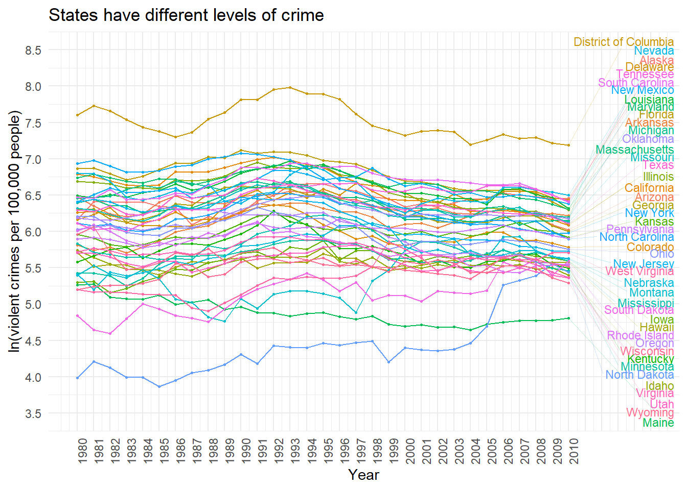
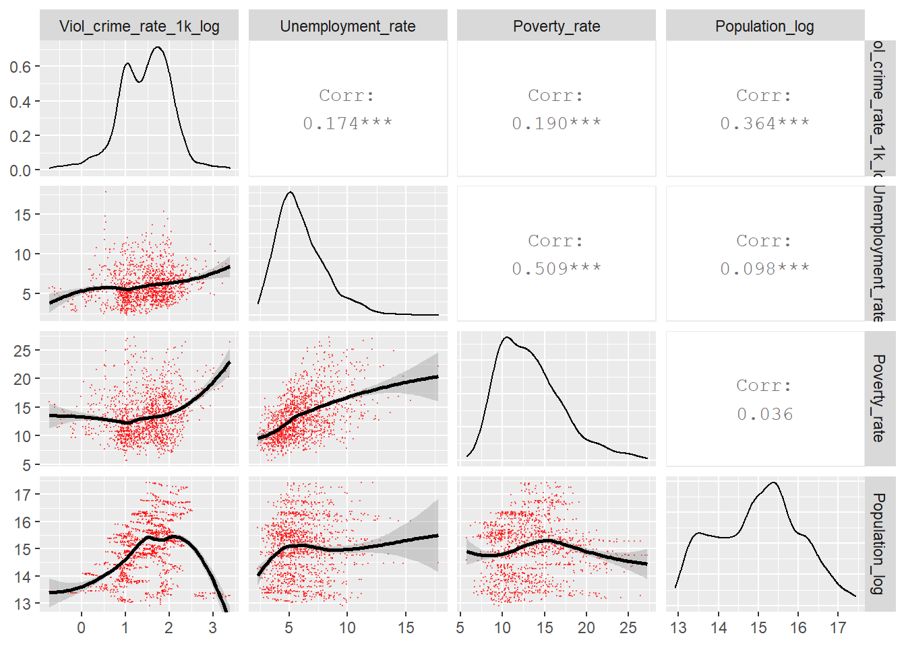

Influence of Multicollinearity on Measured Impact of Right-to-Carry Gun Laws
Disclaimer: The purpose of the Open Case Studies project is to demonstrate the use of various data science methods, tools, and software in the context of messy, real-world data. A given case study does not cover all aspects of the research process, is not claiming to be the most appropriate way to analyze a given data set, and should not be used in the context of making policy decisions without external consultation from scientific experts.
This work is licensed under the Creative Commons Attribution-NonCommercial 3.0 (CC BY-NC 3.0) United States License.
To cite this case study please use:
Wright, Carrie and Ontiveros, Michael and Jager, Leah and Taub, Margaret and Hicks, Stephanie. (2020). https://github.com//opencasestudies/ocs-bp-RTC-analysis. Influence of Multicollinearity on Measured Impact of Right-to-Carry Gun Laws (Version v1.0.0).
To access the GitHub repository for this case study see here: https://github.com//opencasestudies/ocs-bp-RTC-analysis.
This case study is part of a series of public health case studies for the Bloomberg American Health Initiative.
Motivation
This case study will introduce the topic of multicollinearity, which occurs in regression when one or more independent variables can be predicted by other independent variables.
We will do so by showcasing a real world example where multicollinearity in part resulted in historically controversial and conflicting findings about the influence of the adoption of right-to-carry (RTC) concealed handgun laws on violent crime rates in the United States.
We will focus on two articles:
- The first analysis by Mustard and Lott published in 1996 suggests that RTC laws reduce violent crime. Lott authored a book extending these findings in 1998 called More Guns, Less Crime.
[source]
- The second analysis is a recent article by Donohue, et al. published in 2017 that suggests that RTC laws increase violent crime. Donohue has also published previous articles with titles such as Shooting down the “More Guns, Less Crime” Hypothesis.
[source]
This has been a controversial topic as many other analyses also produced conflicting results. See here for a list of studies.
The Donohue, et al. article discusses how there are many other important methodological aspects besides multicollinearity (which occurs when predictor or input variables are highly related in a regression analysis) that could account for the historically conflicting results in these previous manuscripts.
In fact, nearly every aspect of the data analysis process was different between the Donohue, et al. and Mustard and Lott analyses.
However, we will focus particularly on multicollinearity and how it can influence the results we get from linear regression. Specifically, this analysis will demonstrate how methodological details can be critically influential for our overall conclusions and can result in important policy related consequences. The Donohue, et al. article will provide the motivation and illustration.
John J. Donohue et al., Right‐to‐Carry Laws and Violent Crime: A Comprehensive Assessment Using Panel Data and a State‐Level Synthetic Control Analysis. Journal of Empirical Legal Studies, 16,2 (2019).
David B. Mustard & John Lott. Crime, Deterrence, and Right-to-Carry Concealed Handguns. Coase-Sandor Institute for Law & Economics Working Paper No. 41, (1996).
Before we leave this section, we provide a high-level overview of what variables were (or were not) included in the Donohue, Aneja and Weber (DAW) paper and the Mustard and Lott (ML) paper:
[source]
*ML is abbreviated as LM in the source article
Note: We are not attempting to re-create the analyses from the original authors. Instead, we aim to use a subset of the listed explanatory variables in this case study to demonstrate multicollinearity. These variables will be consistent for both analyses that we will perform, with the exception that one analysis will have 6 demographic variables as in the analysis in the Donohue, et al. article and the other will have 36 demographic variables, grouping individuals into more specific categories, as in the analysis in the Mustard and Lott article.
Main Question
Our main question:
What is the effect of multicollinearity on coefficient estimates from linear regression models when analyzing right to carry laws and violence rates?
Specifically, we will consider the two ways to define the demographic variables (as described above) and investigate how the inclusion of different numbers of age groups influences the results of an analysis of right to carry laws and violence rates.
Learning Objectives
The skills, methods, and concepts that students will be familiar with by the end of this case study are:
Data Science Learning Objectives:
- Create correlation scatterplots and heatmaps (
GGally,ggcorrplot)
- Create interactive tables (
DT)
- Sample subsets of data (
rsample)
- Combine multiple plots (
cowplot)
- Create data visualizations with equations and text(
ggplot2andlatex2exp)
Statistical Learning Objectives:
- Understand what multicollinearity is and how it can influence linear regression coefficients
- Recognize signs for the presence of multicollinearity and determine its severity
- Illustrate the difference between multicollinearity and correlation
- Implement panel regression analysis in R (
plm) - Relate variance inflation factors (VIFs) to multicollinearity and calculate VIFs in R (
car)
To see another case study about how the original raw data was imported and wrangled please see here.
We will especially focus on using packages and functions from the tidyverse, such as dplyr and ggplot2. The tidyverse is a library of packages created by RStudio. While some students may be familiar with previous R programming packages, these packages make data science in R especially legible and intuitive.

Context
So what exactly is a right-to-carry law?
It is a law that specifies if and how citizens are allowed to have a firearm on their person or nearby (for example, in a citizen’s car) in public. In this discussion, we will use the National Rifle Association (NRA) terminology. Please keep in mind that there are other terms that people use.
The Second Amendment to the United States Constitution guarantees the right to “keep and bear arms”. The amendment was ratified in 1791 as part of the Bill of Rights.

[source]
However, there are no federal laws about carrying firearms in public.
These laws are created and enforced at the US state level. States vary greatly in their laws about the right to carry firearms. Some require extensive effort to obtain a permit to legally carry a firearm, while other states require very minimal effort to do so. An increasing number of states do not require permits at all.
Click here for more information on history of right-to-carry policies in the US.
According to the Wikipedia entry about the history of right-to-carry policies in the United States:
Public perception on concealed carry vs open carry has largely flipped. In the early days of the United States, open carrying of firearms, long guns and revolvers was a common and well-accepted practice. Seeing guns carried openly was not considered to be any cause for alarm. Therefore, anyone who would carry a firearm but attempt to conceal it was considered to have something to hide, and presumed to be a criminal. For this reason, concealed carry was denounced as a detestable practice in the early days of the United States.
Concealed weapons bans were passed in Kentucky and Louisiana in 1813. (In those days open carry of weapons for self-defense was considered acceptable; concealed carry was denounced as the practice of criminals.) By 1859, Indiana, Tennessee, Virginia, Alabama, and Ohio had followed suit. By the end of the nineteenth century, similar laws were passed in places such as Texas, Florida, and Oklahoma, which protected some gun rights in their state constitutions. Before the mid 1900s, most U.S. states had passed concealed carry laws rather than banning weapons completely. Until the late 1990s, many Southern states were either “No-Issue” or “Restrictive May-Issue”. Since then, these states have largely enacted “Shall-Issue” licensing laws, with numerous states legalizing “Unrestricted concealed carry”.
There are five broad categories of right-to-carry laws according to the NRA:

[source]
You can see that no state in the US currently (this map is from 2020) has a “Rights Infringed/Non-Issue” law (the gray category) – meaning that all 50 states in the US allow the right to carry firearms at least in some way. However the level of restrictions is dramatically different from one state to another. For comparison purposes, many authors use the terms “shall issue”, “shall issue with discretion”, “no permit required”, “may issue”, and “non-issue” to describe these categories instead of the NRA terminology.
Click here for more information about how restrictions vary from one state to another.
There is variation from state to state even within the same general category:
For example here is an abridged version of the current carry laws in Idaho which is considered an “Unrestricted - no permit required” state:
State law … allows any resident of Idaho or a current member of the armed forces of the United States to carry a concealed handgun without a license to carry, provided the person is over 18 years old and not disqualified from being issued a license to carry concealed weapons under state law. An amendment to state law that takes effect on July 1, 2020 changes the reference in the above law from “a resident of Idaho” to “any citizen of the United States.”
And here are is an abridged version of the current carry laws in Arizona which is also considered an “Unrestricted - no permit required” state:
Any person 21 years of age or older, who is not prohibited possessor, may carry a weapon openly or concealed without the need for a license…
Notice that citizens in Idaho only need to be 18 to carry a firearm, whereas they must be 21 in Arizona.
Limitations
There are some important considerations regarding this data analysis to keep in mind:
We do not use all of the data used by either the Mustard and Lott or Donohue, et al. analyses, nor do we perform the same analysis as in each article. We instead perform a much simpler analysis with fewer variables for the purposes of illustration of the concept of multicollinearity and its influence on regression coefficients, not to reproduce either analysis.
Our analysis accounts for either the adoption or lack of adoption of a permissive right-to-carry law in each state, but does not account for differences in the level of permissiveness of the laws.
Recall that these are the categories of right to carry laws:
States with laws of the category rights restricted - very limited issue (red) are considered as not having a permissive right-to-carry law. Recall that no states currently have a rights infringed/non-issue law.
States of all other categories (shall issue, discretionary/reasonable issue, and no permit required, all shades of blue) are considered the same in our analysis, as having a permissive right-to-carry law.
Because our analysis is an oversimplification, the results presented here should not be used for determining policy changes; instead we suggest that users interested in such a determination consult with a specialist.
The inclusion of race as an explanatory variable in an epidemiological study can be useful in certain circumstances. However, there are limitations and issues around defining, determining, and reporting race, as well as in interpreting differences in public health outcomes by race. For more information on this topic, we have included a link to a paper on the use of race as a measure in epidemiology. We include race in this analysis to demonstrate and consider the limitations of what the previous papers have done to analyze the influence of RTC laws on violent crime, with a focus on multicollinearity. Thus in our analysis we have also defined race as was previously done in these papers. Furthermore, we want to point out that reporting analyses about crime with race as a variable can have very unexpected consequences and thus care should be taken. See here for suggestions. Any association between demographic variables (indicating the proportion of the population from specific race and age groups) and violent crime does not necessarily indicate that the two are linked causally, as aside from the issues presented in the article, this may instead indicate higher rates of police engagement with certain racial groups due to racial profling.
The ACLU defines racial profiling as:
“Racial Profiling” refers to the discriminatory practice by law enforcement officials of targeting individuals for suspicion of crime based on the individual’s race, ethnicity, religion or national origin.
We will begin by loading the packages that we will need:
library(here)
library(dplyr)
library(magrittr)
library(purrr)
library(tibble)
library(ggplot2)
library(ggrepel)
library(plm)
library(broom)
library(GGally)
library(ggcorrplot)
library(rsample)
library(DT)
library(car)
library(stringr)
library(cowplot)
library(latex2exp)Packages used in this case study:
| Package | Use in this case study |
|---|---|
here |
to easily load and save data |
dplyr |
to arrange/filter/select/compare specific subsets of the data |
magrittr |
to use the compound assignment pipe operator %<>% |
purrr |
to import the data in all the different excel and csv files efficiently |
tibble |
to create data objects that we can manipulate with dplyr/stringr/tidyr/purrr |
ggplot2 |
to create plots |
ggrepel |
to allow labels in figures not to overlap |
plm |
to work with panel data fitting fixed effects and linear regression models |
broom |
to create nicely formatted model output |
GGally |
to extend ggplot2 functionality to easily create more complex plots |
ggcorrplot |
to easily visualize a correlation matrix |
rsample |
to split our sample for the simulation analysis |
DT |
to create interactive and searchable tables |
car |
to calculate VIF values on linear model output |
stringr |
to manipulate the character strings within the data |
cowplot |
to allow plots to be combined |
latex2exp |
to convert latex math formulas to R’s plotmath expressions |
The first time we use a function, we will use the :: to indicate which package we are using. Unless we have overlapping function names, this is not necessary, but we will include it here to be informative about where the functions we will use come from.
What are the data?
Below is a table from the Donohue, et al. paper that shows the data used in both analyses, where DAW stands for Donohue, et al. and LM stands for Mustard and Lott.
We will be using a subset of these variables, which are highlighted in green:

Data Import and Wrangling
See this case study for details about data import and wrangling. We include data sources here for completeness, but will start from processed data in this case study.
Demographic and population data
To obtain information about age, sex, race, and overall population size we will use US Census Bureau data, as was done in both of the articles. The census data is available for different time spans. Here are the links for the years used in our analysis. We will use data from 1977 to 2010.
| Data | Link |
|---|---|
| years 1977 to 1979 | link |
| years 1980 to 1989 | link * county data was used for this decade which also has state information |
| years 1990 to 1999 | link |
| years 2000 to 2010 | link technical documentation |
Right-to-carry data
This data is extracted from table in Donohue paper.
Here is the table from the Donohue paper that compares the data used in the analyses:
[source]
*ML is abbreviated as LM in the source article
We can see that only the percentage of males that were from age 15-39 of the race groups (black, white, and other) were used in the Donohue analysis, whereas the Mustard and Lott paper, individuals from ages 10 to over 65 were used.
The final products from our data wrangling which is described in another case study are two tibbles of data each with variables selected to be similar to those used in either the Donohue or Mustard and Lott analysis. The overarching idea of this case study is to compare the model results from these two datasets, which differ only in the demographic variables. This is an oversimplification of the actual differences between the datasets and approaches taken by Donohue and Lott/Mustard, but will be useful for illustrating the impact of multicollinearity on our modeling results, which is the main objective of this case study.
If you have trouble accessing the GitHub Repository, the “Wrangled_data.rda” data can be downloaded from here.
We will load this data now.
In our case, we downloaded this data and put it within a “data” directory for our project. If you use an RStudio project, then you can use the here() function of the here package to make the path for loading this data simpler. The here package automatically starts looking for files based on where you have a .Rproj file which is created when you start a new RStudio project. We can specify that we want to look for the file within the “data” directory within a directory where our .Rproj file is located by separating the name of the “data” directory and the file name using comma.
Click here to see more about creating new projects in RStudio.
You can create a project by going to the File menu of RStudio like so:

You can also do so by clicking the project button:

See here to learn more about using RStudio projects.
We will check the dimensions of each tibble using the base dim() function:
[1] 1395 50[1] 1395 20As expected the Lott_DF is 30 columns larger, due to the 30 additional demographic variables. We can check those now as well.
[1] "YEAR" "STATE"
[3] "Black_Female_10_to_19_years" "Black_Female_20_to_29_years"
[5] "Black_Female_30_to_39_years" "Black_Female_40_to_49_years"
[7] "Black_Female_50_to_64_years" "Black_Female_65_years_and_over"
[9] "Black_Male_10_to_19_years" "Black_Male_20_to_29_years"
[11] "Black_Male_30_to_39_years" "Black_Male_40_to_49_years"
[13] "Black_Male_50_to_64_years" "Black_Male_65_years_and_over"
[15] "Other_Female_10_to_19_years" "Other_Female_20_to_29_years"
[17] "Other_Female_30_to_39_years" "Other_Female_40_to_49_years"
[19] "Other_Female_50_to_64_years" "Other_Female_65_years_and_over"
[21] "Other_Male_10_to_19_years" "Other_Male_20_to_29_years"
[23] "Other_Male_30_to_39_years" "Other_Male_40_to_49_years"
[25] "Other_Male_50_to_64_years" "Other_Male_65_years_and_over"
[27] "White_Female_10_to_19_years" "White_Female_20_to_29_years"
[29] "White_Female_30_to_39_years" "White_Female_40_to_49_years"
[31] "White_Female_50_to_64_years" "White_Female_65_years_and_over"
[33] "White_Male_10_to_19_years" "White_Male_20_to_29_years"
[35] "White_Male_30_to_39_years" "White_Male_40_to_49_years"
[37] "White_Male_50_to_64_years" "White_Male_65_years_and_over"
[39] "Unemployment_rate" "Poverty_rate"
[41] "Viol_crime_count" "Population"
[43] "police_per_100k_lag" "RTC_LAW_YEAR"
[45] "RTC_LAW" "TIME_0"
[47] "TIME_INF" "Viol_crime_rate_1k"
[49] "Viol_crime_rate_1k_log" "Population_log" [1] "YEAR" "STATE"
[3] "Black_Male_15_to_19_years" "Black_Male_20_to_39_years"
[5] "Other_Male_15_to_19_years" "Other_Male_20_to_39_years"
[7] "White_Male_15_to_19_years" "White_Male_20_to_39_years"
[9] "Unemployment_rate" "Poverty_rate"
[11] "Viol_crime_count" "Population"
[13] "police_per_100k_lag" "RTC_LAW_YEAR"
[15] "RTC_LAW" "TIME_0"
[17] "TIME_INF" "Viol_crime_rate_1k"
[19] "Viol_crime_rate_1k_log" "Population_log" Lastly, we will check that the YEAR values are the same, i.e., that the two tibbles contain data from the same set of years. We can use the setequal() function of the dplyr package to see if the values are the same.
[1] TRUEData Exploration
Let’s do some quick visualizations to get a sense of our outcome of interest, the violent crime data.
First we will plot the rate of violent crime over time to get a sense of the general trend.
To do so we need to summarize the data for each year across all of the states. Thus we will use the group_by() function and the summarize() functions to calculate an overall number of violent crimes relative to the total population for each year. In fact, we will calculate the log of the number of violent crimes per 100,000 individuals, as this will make it easier to see the trend in the data. In addition, by looking at the rate per 100,000 individuals, we can more directly compare crime statistics across groups like states with different populations, as you will see below.
Then we will use the ggplot2 package to plot the data. The first step in creating a plot with this package is to use the ggplot() function and the aes() argument to specify what data should be plotted on the x-axis and what data should be plotted in on the y-axis. Then we select what type of plot we would like to make using one of the geom_*() functions. Please see this case study for more details.
We can use the scale_x_continuous() and scale_y_continuous() functions to modify the axis tick marks and their labels.
The labs() function can be used to add labels to the plot, while the theme() function allows for manipulation of the details of the labels, like size and angle.
All of these functions are part of the ggplot2 package.
DONOHUE_DF %>%
group_by(YEAR) %>%
summarize(
Viol_crime_count = sum(Viol_crime_count),
Population = sum(Population),
.groups = "drop"
) %>%
mutate(Viol_crime_rate_100k_log = log((Viol_crime_count * 100000) / Population)) %>%
ggplot(aes(x = YEAR, y = Viol_crime_rate_100k_log)) +
geom_line() +
scale_x_continuous(
breaks = seq(1980, 2010, by = 1),
limits = c(1980, 2010),
labels = c(seq(1980, 2010, by = 1))
) +
scale_y_continuous(
breaks = seq(5.75, 6.75, by = 0.25),
limits = c(5.75, 6.75)
) +
labs(
title = "Crime rates fluctuate over time",
x = "Year",
y = "ln(violent crimes per 100,000 people)"
) +
theme_minimal() +
theme(axis.text.x = element_text(angle = 90)) Interesting! It appears that there was an overall national peak in violent crime in the early 1990s that has since then declined.
Interesting! It appears that there was an overall national peak in violent crime in the early 1990s that has since then declined.
Now let’s take a look at each state.
We will use the ggrepel package to add text to the plot using the geom_text_repel() function. This is especially useful when there is a lot of text, as this function reduces the overlap of text labels. Again see this case study for more details on how to add labels to elements of plots.
DONOHUE_DF %>%
mutate(Viol_crime_rate_100k_log = log((Viol_crime_count * 100000) / Population)) %>%
ggplot(aes(x = YEAR, y = Viol_crime_rate_100k_log, color = STATE)) +
geom_point(size = 0.5) +
geom_line(aes(group = STATE),
size = 0.5,
show.legend = FALSE
) +
geom_text_repel(
data = DONOHUE_DF %>%
mutate(Viol_crime_rate_100k_log = log((Viol_crime_count * 100000) / Population)) %>%
filter(YEAR == last(YEAR)),
aes(
label = STATE,
x = YEAR,
y = Viol_crime_rate_100k_log
),
size = 3,
alpha = 1,
nudge_x = 10,
direction = "y",
hjust = 1,
vjust = 1,
segment.size = 0.25,
segment.alpha = 0.25,
force = 1,
max.iter = 9999
) +
guides(color = FALSE) +
scale_x_continuous(
breaks = seq(1980, 2015, by = 1),
limits = c(1980, 2015),
labels = c(seq(1980, 2010, by = 1), rep("", 5))
) +
scale_y_continuous(
breaks = seq(3.5, 8.5, by = 0.5),
limits = c(3.5, 8.5)
) +
labs(
title = "States have different levels of crime",
x = "Year",
y = "ln(violent crimes per 100,000 people)"
) +
theme_minimal() +
theme(axis.text.x = element_text(angle = 90))
It looks like the crime rates vary quite a bit from one state to another. Some states show increased crime over time while others show decreased crime.
Now let’s take a closer look at some of our other variables.
As we do this, we may start to run into issues with missing data for some of our variables, and it is always good to be aware of missing data in any data analysis. We can use the vis_miss() function of the naniar package to confirm that there are no missing values.
Looks like no missing data!
Same for the LOTT_DF.
We can use the skim() of the skimr package to get a better sense of the data. This also shows missingness, as well as standard deviations, spread, and means for our data. Also notice that there is a small histogram of each variable in the final column.
| Name | DONOHUE_DF |
| Number of rows | 1395 |
| Number of columns | 20 |
| _______________________ | |
| Column type frequency: | |
| character | 1 |
| logical | 1 |
| numeric | 18 |
| ________________________ | |
| Group variables | None |
Variable type: character
| skim_variable | n_missing | complete_rate | min | max | empty | n_unique | whitespace |
|---|---|---|---|---|---|---|---|
| STATE | 0 | 1 | 4 | 20 | 0 | 45 | 0 |
Variable type: logical
| skim_variable | n_missing | complete_rate | mean | count |
|---|---|---|---|---|
| RTC_LAW | 0 | 1 | 0.37 | FAL: 883, TRU: 512 |
Variable type: numeric
| skim_variable | n_missing | complete_rate | mean | sd | p0 | p25 | p50 | p75 | p100 | hist |
|---|---|---|---|---|---|---|---|---|---|---|
| YEAR | 0 | 1 | 1995.00 | 8.95 | 1980.00 | 1987.00 | 1995.00 | 2003.00 | 2010.00 | ▇▇▇▇▇ |
| Black_Male_15_to_19_years | 0 | 1 | 0.52 | 0.51 | 0.02 | 0.13 | 0.35 | 0.73 | 3.46 | ▇▂▁▁▁ |
| Black_Male_20_to_39_years | 0 | 1 | 1.73 | 1.76 | 0.07 | 0.50 | 1.17 | 2.30 | 11.33 | ▇▂▁▁▁ |
| Other_Male_15_to_19_years | 0 | 1 | 0.26 | 0.40 | 0.01 | 0.08 | 0.14 | 0.28 | 2.90 | ▇▁▁▁▁ |
| Other_Male_20_to_39_years | 0 | 1 | 0.92 | 1.40 | 0.07 | 0.31 | 0.55 | 0.99 | 9.90 | ▇▁▁▁▁ |
| White_Male_15_to_19_years | 0 | 1 | 3.09 | 0.72 | 0.55 | 2.69 | 3.14 | 3.54 | 4.99 | ▁▁▇▇▁ |
| White_Male_20_to_39_years | 0 | 1 | 12.55 | 2.29 | 4.41 | 11.18 | 12.65 | 14.15 | 18.44 | ▁▂▇▇▂ |
| Unemployment_rate | 0 | 1 | 6.03 | 2.10 | 2.30 | 4.50 | 5.60 | 7.20 | 17.80 | ▇▇▂▁▁ |
| Poverty_rate | 0 | 1 | 13.34 | 3.84 | 5.70 | 10.40 | 12.70 | 15.50 | 27.20 | ▃▇▅▁▁ |
| Viol_crime_count | 0 | 1 | 31760.77 | 46494.46 | 322.00 | 5107.50 | 14412.00 | 38782.50 | 345624.00 | ▇▁▁▁▁ |
| Population | 0 | 1 | 5446810.81 | 6070687.33 | 404680.00 | 1363737.50 | 3504892.00 | 6411701.00 | 37349363.00 | ▇▂▁▁▁ |
| police_per_100k_lag | 0 | 1 | 316.57 | 115.59 | 83.76 | 248.53 | 301.00 | 358.31 | 1021.14 | ▅▇▁▁▁ |
| RTC_LAW_YEAR | 0 | 1 | Inf | NaN | 1985.00 | 1995.00 | 1997.00 | 2011.00 | Inf | ▇▇▂▅▂ |
| TIME_0 | 0 | 1 | 1980.00 | 0.00 | 1980.00 | 1980.00 | 1980.00 | 1980.00 | 1980.00 | ▁▁▇▁▁ |
| TIME_INF | 0 | 1 | 2010.00 | 0.00 | 2010.00 | 2010.00 | 2010.00 | 2010.00 | 2010.00 | ▁▁▇▁▁ |
| Viol_crime_rate_1k | 0 | 1 | 5.05 | 3.19 | 0.48 | 2.85 | 4.54 | 6.44 | 29.30 | ▇▃▁▁▁ |
| Viol_crime_rate_1k_log | 0 | 1 | 1.45 | 0.60 | -0.74 | 1.05 | 1.51 | 1.86 | 3.38 | ▁▂▇▅▁ |
| Population_log | 0 | 1 | 14.99 | 1.05 | 12.91 | 14.13 | 15.07 | 15.67 | 17.44 | ▃▅▇▅▂ |
| Name | LOTT_DF |
| Number of rows | 1395 |
| Number of columns | 50 |
| _______________________ | |
| Column type frequency: | |
| character | 1 |
| logical | 1 |
| numeric | 48 |
| ________________________ | |
| Group variables | None |
Variable type: character
| skim_variable | n_missing | complete_rate | min | max | empty | n_unique | whitespace |
|---|---|---|---|---|---|---|---|
| STATE | 0 | 1 | 4 | 20 | 0 | 45 | 0 |
Variable type: logical
| skim_variable | n_missing | complete_rate | mean | count |
|---|---|---|---|---|
| RTC_LAW | 0 | 1 | 0.37 | FAL: 883, TRU: 512 |
Variable type: numeric
| skim_variable | n_missing | complete_rate | mean | sd | p0 | p25 | p50 | p75 | p100 | hist |
|---|---|---|---|---|---|---|---|---|---|---|
| YEAR | 0 | 1 | 1995.00 | 8.95 | 1980.00 | 1987.00 | 1995.00 | 2003.00 | 2010.00 | ▇▇▇▇▇ |
| Black_Female_10_to_19_years | 0 | 1 | 1.00 | 1.02 | 0.02 | 0.23 | 0.63 | 1.44 | 6.53 | ▇▂▁▁▁ |
| Black_Female_20_to_29_years | 0 | 1 | 0.99 | 1.09 | 0.02 | 0.23 | 0.60 | 1.36 | 7.73 | ▇▂▁▁▁ |
| Black_Female_30_to_39_years | 0 | 1 | 0.91 | 1.00 | 0.01 | 0.19 | 0.57 | 1.27 | 6.11 | ▇▂▁▁▁ |
| Black_Female_40_to_49_years | 0 | 1 | 0.75 | 0.86 | 0.01 | 0.13 | 0.48 | 1.09 | 5.45 | ▇▂▁▁▁ |
| Black_Female_50_to_64_years | 0 | 1 | 0.76 | 0.96 | 0.00 | 0.12 | 0.44 | 1.06 | 6.10 | ▇▂▁▁▁ |
| Black_Female_65_years_and_over | 0 | 1 | 0.60 | 0.85 | 0.00 | 0.07 | 0.34 | 0.81 | 6.12 | ▇▁▁▁▁ |
| Black_Male_10_to_19_years | 0 | 1 | 1.02 | 1.01 | 0.03 | 0.26 | 0.67 | 1.46 | 6.32 | ▇▂▁▁▁ |
| Black_Male_20_to_29_years | 0 | 1 | 0.93 | 0.93 | 0.04 | 0.29 | 0.65 | 1.24 | 6.57 | ▇▂▁▁▁ |
| Black_Male_30_to_39_years | 0 | 1 | 0.81 | 0.84 | 0.02 | 0.23 | 0.54 | 1.08 | 5.37 | ▇▂▁▁▁ |
| Black_Male_40_to_49_years | 0 | 1 | 0.65 | 0.72 | 0.01 | 0.15 | 0.43 | 0.92 | 4.45 | ▇▂▁▁▁ |
| Black_Male_50_to_64_years | 0 | 1 | 0.62 | 0.76 | 0.00 | 0.13 | 0.38 | 0.86 | 4.79 | ▇▂▁▁▁ |
| Black_Male_65_years_and_over | 0 | 1 | 0.38 | 0.51 | 0.00 | 0.05 | 0.24 | 0.51 | 3.56 | ▇▁▁▁▁ |
| Other_Female_10_to_19_years | 0 | 1 | 0.51 | 0.77 | 0.03 | 0.15 | 0.27 | 0.55 | 5.33 | ▇▁▁▁▁ |
| Other_Female_20_to_29_years | 0 | 1 | 0.49 | 0.70 | 0.04 | 0.17 | 0.30 | 0.55 | 5.55 | ▇▁▁▁▁ |
| Other_Female_30_to_39_years | 0 | 1 | 0.47 | 0.74 | 0.04 | 0.16 | 0.28 | 0.51 | 5.36 | ▇▁▁▁▁ |
| Other_Female_40_to_49_years | 0 | 1 | 0.38 | 0.69 | 0.02 | 0.11 | 0.21 | 0.38 | 5.46 | ▇▁▁▁▁ |
| Other_Female_50_to_64_years | 0 | 1 | 0.38 | 0.83 | 0.02 | 0.09 | 0.18 | 0.35 | 7.10 | ▇▁▁▁▁ |
| Other_Female_65_years_and_over | 0 | 1 | 0.24 | 0.72 | 0.01 | 0.05 | 0.09 | 0.18 | 6.20 | ▇▁▁▁▁ |
| Other_Male_10_to_19_years | 0 | 1 | 0.52 | 0.80 | 0.03 | 0.15 | 0.28 | 0.56 | 5.58 | ▇▁▁▁▁ |
| Other_Male_20_to_29_years | 0 | 1 | 0.48 | 0.70 | 0.03 | 0.17 | 0.29 | 0.53 | 5.33 | ▇▁▁▁▁ |
| Other_Male_30_to_39_years | 0 | 1 | 0.44 | 0.71 | 0.03 | 0.14 | 0.26 | 0.47 | 5.06 | ▇▁▁▁▁ |
| Other_Male_40_to_49_years | 0 | 1 | 0.35 | 0.65 | 0.02 | 0.09 | 0.19 | 0.34 | 5.13 | ▇▁▁▁▁ |
| Other_Male_50_to_64_years | 0 | 1 | 0.33 | 0.73 | 0.01 | 0.08 | 0.15 | 0.29 | 6.50 | ▇▁▁▁▁ |
| Other_Male_65_years_and_over | 0 | 1 | 0.19 | 0.58 | 0.01 | 0.03 | 0.07 | 0.14 | 4.51 | ▇▁▁▁▁ |
| White_Female_10_to_19_years | 0 | 1 | 5.72 | 1.38 | 0.94 | 5.01 | 5.82 | 6.61 | 9.45 | ▁▁▇▆▁ |
| White_Female_20_to_29_years | 0 | 1 | 6.09 | 1.36 | 1.59 | 5.23 | 5.92 | 6.93 | 9.66 | ▁▂▇▅▂ |
| White_Female_30_to_39_years | 0 | 1 | 6.17 | 1.22 | 1.53 | 5.46 | 6.28 | 7.02 | 8.95 | ▁▁▅▇▂ |
| White_Female_40_to_49_years | 0 | 1 | 5.58 | 1.23 | 1.20 | 4.85 | 5.68 | 6.41 | 8.33 | ▁▁▇▇▃ |
| White_Female_50_to_64_years | 0 | 1 | 6.56 | 1.45 | 1.72 | 6.01 | 6.57 | 7.34 | 11.40 | ▁▂▇▂▁ |
| White_Female_65_years_and_over | 0 | 1 | 6.38 | 1.70 | 1.05 | 5.37 | 6.62 | 7.51 | 9.90 | ▁▁▆▇▂ |
| White_Male_10_to_19_years | 0 | 1 | 6.04 | 1.43 | 1.02 | 5.30 | 6.14 | 6.95 | 9.74 | ▁▁▇▇▁ |
| White_Male_20_to_29_years | 0 | 1 | 6.28 | 1.33 | 2.41 | 5.43 | 6.12 | 7.14 | 10.84 | ▁▆▇▃▁ |
| White_Male_30_to_39_years | 0 | 1 | 6.27 | 1.19 | 1.93 | 5.59 | 6.33 | 7.06 | 9.67 | ▁▂▇▆▁ |
| White_Male_40_to_49_years | 0 | 1 | 5.59 | 1.22 | 1.35 | 4.79 | 5.67 | 6.43 | 8.39 | ▁▁▇▇▂ |
| White_Male_50_to_64_years | 0 | 1 | 6.26 | 1.40 | 1.78 | 5.64 | 6.19 | 6.94 | 10.93 | ▁▂▇▂▁ |
| White_Male_65_years_and_over | 0 | 1 | 4.56 | 1.19 | 1.02 | 3.80 | 4.78 | 5.34 | 7.51 | ▁▂▇▇▁ |
| Unemployment_rate | 0 | 1 | 6.03 | 2.10 | 2.30 | 4.50 | 5.60 | 7.20 | 17.80 | ▇▇▂▁▁ |
| Poverty_rate | 0 | 1 | 13.34 | 3.84 | 5.70 | 10.40 | 12.70 | 15.50 | 27.20 | ▃▇▅▁▁ |
| Viol_crime_count | 0 | 1 | 31760.77 | 46494.46 | 322.00 | 5107.50 | 14412.00 | 38782.50 | 345624.00 | ▇▁▁▁▁ |
| Population | 0 | 1 | 5446810.81 | 6070687.33 | 404680.00 | 1363737.50 | 3504892.00 | 6411701.00 | 37349363.00 | ▇▂▁▁▁ |
| police_per_100k_lag | 0 | 1 | 316.57 | 115.59 | 83.76 | 248.53 | 301.00 | 358.31 | 1021.14 | ▅▇▁▁▁ |
| RTC_LAW_YEAR | 0 | 1 | Inf | NaN | 1985.00 | 1995.00 | 1997.00 | 2011.00 | Inf | ▇▇▂▅▂ |
| TIME_0 | 0 | 1 | 1980.00 | 0.00 | 1980.00 | 1980.00 | 1980.00 | 1980.00 | 1980.00 | ▁▁▇▁▁ |
| TIME_INF | 0 | 1 | 2010.00 | 0.00 | 2010.00 | 2010.00 | 2010.00 | 2010.00 | 2010.00 | ▁▁▇▁▁ |
| Viol_crime_rate_1k | 0 | 1 | 5.05 | 3.19 | 0.48 | 2.85 | 4.54 | 6.44 | 29.30 | ▇▃▁▁▁ |
| Viol_crime_rate_1k_log | 0 | 1 | 1.45 | 0.60 | -0.74 | 1.05 | 1.51 | 1.86 | 3.38 | ▁▂▇▅▁ |
| Population_log | 0 | 1 | 14.99 | 1.05 | 12.91 | 14.13 | 15.07 | 15.67 | 17.44 | ▃▅▇▅▂ |
We can see from this function that we have the number of variables of the class types that we expect for each tibble. We can also see that the means of the variables that should be the same for each tibble are in fact the same. We can also tell that the values for the variables are in general what we would expect.
Exercise
Suppose we have a data set called mydata. Using functions that we talked about earlier, check if there are missing data for the variables.
# check for missing data
mydata %>%# first way
mydata %>%
naniar::vis_miss()
# second way
skimr::skim(mydata)
# So there is missing data in "Var2"Data Analysis
Panel Analysis
In these datasets, we have what is called panel data, a special type of longitudinal data. Longitudinal data are data measurements taken over time. Panel data are data repeatedly measured for multiple panel members or individuals over time. This is in contrast with time series data, which measures one individual over time and cross sectional data, which measures multiple individuals at one point in time. In other words, panel data is a combination of both, with measurements for multiple individuals/units of observation over multiple time periods. In our case, we have measurements of violent crime and other variables for each state over many years. Therefore we are using measurements about the same states over time.
In a panel analysis there are \(N\) individual panel members and \(T\) time points.
There are two types of panels:
1. Balanced - At each time point (\(T\)), there are data points for each individual(\(N\)).
| Time Points (\(T\)) | Individuals (\(N\)) |
|---|---|
| 1977 | Nevada |
| 1977 | Alabama |
| 1977 | Kansas |
| 1978 | Nevada |
| 1978 | Alabama |
| 1978 | Kansas |
| 1979 | Nevada |
| 1979 | Alabama |
| 1979 | Kansas |
- Unbalanced - There may be data points missing for some individuals (\(N\)) at some time points (\(T\)).
| Time Points (\(T\)) | Individuals (\(N\)) |
|---|---|
| 1977 | Nevada |
| 1977 | Alabama |
| 1978 | Nevada |
| 1978 | Alabama |
| 1979 | Nevada |
| 1979 | Alabama |
| 1979 | Kansas |
Overall in a balanced panel, we have \(n\) observations, where \(n = N*T\).
In an unbalanced panel, the number of observations is less than \(N*T\).
In our case we have:
\(N\) = 45 states (in the data wrangling process we removed those who had adopted an RTC law before 1980)
\(T\) = 31 years (1980 - 2010)
In every year we have measurements for each state (as we just saw above), thus our panel is balanced.
So, our total observations \(n = 45*31\), thus \(n\) = 1395.
We will be performing a panel linear regression model analysis.
In such an analysis we will model our data according to this generic model:
\[Y_{it}=β_{0}+β_{1}X_{1it}+...+β_{K}X_{Kit}+e_{it}\]
Where \(i\) is the individual dimension (in our case individual states) and \(t\) is the time dimension.
Some explanatory/independent variables or regressors \(X_{it}\) will vary across individuals and time, while others will be fixed across the time of the study (or don’t change over time), while others still will be fixed across individuals but vary across time periods.
There are three general sub-types of panel regression analysis.
Overall, they assume that the different individuals are independent, however the same data for the same individual may be correlated across time.
The main difference between the three sub-types are the assumptions about unobserved differences between individuals.
If you are familiar with fixed and random effects in the context in the statistical literature the following econometric definitions will sound a bit different.
From the plm package vignette:
In the mixed models literature,…fixed effect indicates a parameter that is assumed constant, while random effects are parameters that vary randomly around zero according to a joint multivariate normal distribution.
…Having fixed effects in an econometric model has the meaning of allowing the intercept to vary with group, or time, or both, while the other parameters are generally still assumed to be homogeneous. Having random effects means having a group– (or time–, or both) specific component in the error term.
OK, so now that we know not to expect the typical mixed model definitions of fixed and random effects, let’s get back to the three sub-types of panel regression analysis:
independently pooled panels - assumes that there are no individual effects that are independent of time and also no effect of time on all the individuals. In other words, the independent variables are not correlated with any error term. This is essentially an ordinary least squares linear regression. In our setting, it would mean treating each year-state observation as unrelated to the others, which probably does not make sense, since we expect observations within a state to be related to one another. This type of panel regression makes the most assumptions and is therefore typically not used for panel data. In this case the model formulation is: \[Y_{it}=\beta_{0}+\beta_{1}x_{1it}+...+\beta_{K}X_{Kit} + e_{it}\] where the intercept \(\beta_{0it}=\beta_0\)for all \(i,t\) and slope \(\beta_{kit}=\beta_k\) for all \(i,t\).
fixed effects - assumes that there are unknown or unobserved unique aspects about the individuals or heterogeneity among individuals \(a_i\) that are not explained by the independent variables but influence the outcome variable of interest. They do not vary with time or in other words are fixed over time but may be correlated with independent variables \(X_{it}\).
In this case the intercept can be different for each individual \(\beta_{0i}\), but the other coefficients are assumed to be the same across all the individuals.
These individual \(a_i\) effects can be correlated with the independent variables \(X\). This model can be expressed as \[Y_{it}=\beta_{0}+\beta_{1}X_{1it}+...\beta_{K}X_{Kit}+ a_i +e_{it}\] or alternatively the individual effects can be absorbed into an individual-specific intercept term \(\beta_{0i}\): \[Y_{it}=\beta_{0i}+\beta_{1}X_{1it}+...\beta_{k}X_{kit} +e_{it}\] This type of panel regression makes the fewest assumptions.
- random effects - assumes that there are unknown or unobserved unique qualities about the individuals that influence the outcome variable of interest that are not correlated with the independent variables. Thus, the random effects model actually makes more assumptions than the fixed effect model. We will not consider this model here.
There is quite a lot of discussion in econometrics around which model is appropriate to use and when, but we are not going to dwell on this topic here, as our main focus in this case study is on multicollinearity. However, here are some additional references on these topics for further reading: See here and here and here for more information about these different models.
Donohue, et al.
OK! We are now ready to start analyzing our data!
In our case, we will be performing a fixed effect panel regression analysis, as we do in fact think that some of the unobserved qualities about the different states may be correlated with some of our independent variables. For example, the level of economic opportunity might be an unobserved feature about the states that influences violent crime rate and would be possibly correlated with poverty rate and unemployment. There are statistical tests for evaluating which model is the most appropriate, which are implemented in the plm package that we will be using.
To perform our analysis we will be using the plm package. This stands for Panel Linear Model.
We need to use a special type of data to use this package, called a pdata.frame which is short for panel data frame. This allows us to specify that we are using panel data and what the panel structure looks like, i.e., how the different observations are meant to be grouped together, both by state and by time.
We need to indicate which variable should be used to identify the individuals in our panel, and what variable should be used to identify the time periods in our panel. In our case the STATE variable identifies the individuals and the YEAR variable identifies the time periods.
We can specify this structure using the pdata.frame() function of the plm package, by using the index argument, where the individual variable is specified first followed by the time variable, like so: index=c("Individual_Variable_NAME", "Time_Period_Variable_NAME").
[1] "pdata.frame" "data.frame" YEAR STATE Black_Male_15_to_19_years Black_Male_20_to_39_years
Alaska-1980 1980 Alaska 0.1670456 0.9933775
Alaska-1981 1981 Alaska 0.1732299 1.0028219
Alaska-1982 1982 Alaska 0.1737069 1.0204445
Other_Male_15_to_19_years Other_Male_20_to_39_years
Alaska-1980 1.129782 2.963329
Alaska-1981 1.124441 2.974775
Alaska-1982 1.069821 3.015071
White_Male_15_to_19_years White_Male_20_to_39_years
Alaska-1980 3.627805 18.28852
Alaska-1981 3.558261 18.12821
Alaska-1982 3.391844 18.10666
Unemployment_rate Poverty_rate Viol_crime_count Population
Alaska-1980 9.6 9.6 1919 404680
Alaska-1981 9.4 9.0 2537 418519
Alaska-1982 9.9 10.6 2732 449608
police_per_100k_lag RTC_LAW_YEAR RTC_LAW TIME_0 TIME_INF
Alaska-1980 194.7218 1995 FALSE 1980 2010
Alaska-1981 200.2299 1995 FALSE 1980 2010
Alaska-1982 191.0553 1995 FALSE 1980 2010
Viol_crime_rate_1k Viol_crime_rate_1k_log Population_log
Alaska-1980 4.742018 1.556463 12.91085
Alaska-1981 6.061851 1.802015 12.94448
Alaska-1982 6.076404 1.804413 13.01613Indeed we have now created a pdata.frame object and we can see that the row names show the individual states and time period years.
OK, now we are ready to run our panel linear model on our panel data frame.
To do so we will use the plm() function and we will specify the formula for our model, where the dependent variable Viol_crime_rate_1k_log will be on the left of our ~ sign and all of the independent variables will be listed on the right with + signs in between each.
As discussed above, there are different types of panel data analysis, and which type of model is fit is controlled by the effect and model arguments to plm(). So we need to specify what type of effect we would like to model and what type of model we would like to use.
There are three main options for the effect argument: 1) individual - model for the effect of individual identity 2) time - model for the effect of time 3) twoways - meaning modeling for the effect of both individual identity and time
There are four main options for the model argument:
1) pooling - standard pooled ordinary least squares regression model
2) within - fixed effects model (variation between individuals is ignored, model compares individuals to themselves at different periods of time)
3) between - fixed effects model (variation within individuals from one time point to another is ignored, model compares different individuals at each point of time)
4) random - random effects (each state has a different intercept but force it to follow a normal distribution - requires more assumptions)
Typically it is best to think about what you are trying to evaluate with your data in trying to choose how to model your data. However, there are also some tests that can help to assess this which we will briefly cover.
We are interested in how violence in each state varied over time, thus we are interested in within STATEvariation, so we will perform our PLM analysis with the model = within argument to perform this particular type of fixed effects model.
We also speculate that there is an effect of individual STATE identity and time on violent crime rate. In other words, we expect some states to have high rates of crime, and others to have low rates of crime. We also expect crime to change over time. This means we want to use the effect = "twoways" argument to plm().
Here is how we would implement this for the Donohue data:
DONOHUE_OUTPUT <- plm(Viol_crime_rate_1k_log ~
RTC_LAW +
White_Male_15_to_19_years +
White_Male_20_to_39_years +
Black_Male_15_to_19_years +
Black_Male_20_to_39_years +
Other_Male_15_to_19_years +
Other_Male_20_to_39_years +
Unemployment_rate +
Poverty_rate +
Population_log +
police_per_100k_lag,
effect = "twoways",
model = "within",
data = d_panel_DONOHUE
)To see the results we can use the base summary() function. We can view this output in tidy format using the tidy() function of the broom package.
We will add an analysis variable as a label for plots.
Twoways effects Within Model
Call:
plm(formula = Viol_crime_rate_1k_log ~ RTC_LAW + White_Male_15_to_19_years +
White_Male_20_to_39_years + Black_Male_15_to_19_years + Black_Male_20_to_39_years +
Other_Male_15_to_19_years + Other_Male_20_to_39_years + Unemployment_rate +
Poverty_rate + Population_log + police_per_100k_lag, data = d_panel_DONOHUE,
effect = "twoways", model = "within")
Balanced Panel: n = 45, T = 31, N = 1395
Residuals:
Min. 1st Qu. Median 3rd Qu. Max.
-0.57957437 -0.08942194 -0.00090654 0.08673054 1.11216999
Coefficients:
Estimate Std. Error t-value Pr(>|t|)
RTC_LAWTRUE 0.01796779 0.01663911 1.0799 0.2804066
White_Male_15_to_19_years -0.00091825 0.02724210 -0.0337 0.9731160
White_Male_20_to_39_years 0.03466473 0.00972839 3.5633 0.0003794 ***
Black_Male_15_to_19_years -0.05673593 0.05746052 -0.9874 0.3236341
Black_Male_20_to_39_years 0.12605439 0.01931450 6.5264 9.607e-11 ***
Other_Male_15_to_19_years 0.69201638 0.11322394 6.1119 1.297e-09 ***
Other_Male_20_to_39_years -0.30276797 0.03811855 -7.9428 4.226e-15 ***
Unemployment_rate -0.01685806 0.00489952 -3.4408 0.0005984 ***
Poverty_rate -0.00780235 0.00295720 -2.6384 0.0084280 **
Population_log -0.17991653 0.06041773 -2.9779 0.0029559 **
police_per_100k_lag 0.00060391 0.00013689 4.4115 1.111e-05 ***
---
Signif. codes: 0 '***' 0.001 '**' 0.01 '*' 0.05 '.' 0.1 ' ' 1
Total Sum of Squares: 43.211
Residual Sum of Squares: 36.716
R-Squared: 0.15031
Adj. R-Squared: 0.095138
F-statistic: 21.0514 on 11 and 1309 DF, p-value: < 2.22e-16# A tibble: 11 x 7
term estimate std.error statistic p.value conf.low conf.high
<chr> <dbl> <dbl> <dbl> <dbl> <dbl> <dbl>
1 RTC_LAWTRUE 0.0180 0.0166 1.08 2.80e- 1 -1.46e-2 0.0506
2 White_Male_15_to_1~ -0.000918 0.0272 -0.0337 9.73e- 1 -5.43e-2 0.0525
3 White_Male_20_to_3~ 0.0347 0.00973 3.56 3.79e- 4 1.56e-2 0.0537
4 Black_Male_15_to_1~ -0.0567 0.0575 -0.987 3.24e- 1 -1.69e-1 0.0559
5 Black_Male_20_to_3~ 0.126 0.0193 6.53 9.61e-11 8.82e-2 0.164
6 Other_Male_15_to_1~ 0.692 0.113 6.11 1.30e- 9 4.70e-1 0.914
7 Other_Male_20_to_3~ -0.303 0.0381 -7.94 4.23e-15 -3.77e-1 -0.228
8 Unemployment_rate -0.0169 0.00490 -3.44 5.98e- 4 -2.65e-2 -0.00726
9 Poverty_rate -0.00780 0.00296 -2.64 8.43e- 3 -1.36e-2 -0.00201
10 Population_log -0.180 0.0604 -2.98 2.96e- 3 -2.98e-1 -0.0615
11 police_per_100k_lag 0.000604 0.000137 4.41 1.11e- 5 3.36e-4 0.000872As discussed above, we are choosing to use a fixed effects model because we believe it is most appropriate for our data. However, there are statistical tests implemented in the plm package that would allow us to test whether one of the other models would be as appropriate for our data. For example, we could perform a test to determine if we could have simply used a pooled model, i.e., the test evaluates whether the coefficients (including the intercepts) are equal across individuals. This test is implemented in the pooltest() function of the plm package and performs a comparison between the pooled model to the fixed effect within model. To test if using a random effect model would be more appropriate compared to the fixed effect model, one could use the Hausman test (also called the Durbin-Wu-Hausman test). This test is implemented using the phtest() function of the plm package.
Finally, we could also perform a test to evaluate if there is indeed an individual (state) effect and a time effect in our model using the plmtest() function of the plm package.
For more information on these tests and this package, see here and here.
Mustard and Lott
OK, now we will do the same for the Mustard and Lott analysis. In this case we would have a very large formula to write. So instead, we can use the as.formula() function of the stats package and the base paste() function to combine all of our explanatory variables into one formula without making a mistake. First we will create an object where we select only the explanatory variables.
LOTT_variables <- LOTT_DF %>%
dplyr::select(
RTC_LAW,
contains(c("White", "Black", "Other")),
Unemployment_rate,
Poverty_rate,
Population_log,
police_per_100k_lag
) %>%
colnames()
LOTT_fmla <- as.formula(paste(
"Viol_crime_rate_1k_log ~",
paste(LOTT_variables, collapse = " + ")
))
LOTT_fmlaViol_crime_rate_1k_log ~ RTC_LAW + White_Female_10_to_19_years +
White_Female_20_to_29_years + White_Female_30_to_39_years +
White_Female_40_to_49_years + White_Female_50_to_64_years +
White_Female_65_years_and_over + White_Male_10_to_19_years +
White_Male_20_to_29_years + White_Male_30_to_39_years + White_Male_40_to_49_years +
White_Male_50_to_64_years + White_Male_65_years_and_over +
Black_Female_10_to_19_years + Black_Female_20_to_29_years +
Black_Female_30_to_39_years + Black_Female_40_to_49_years +
Black_Female_50_to_64_years + Black_Female_65_years_and_over +
Black_Male_10_to_19_years + Black_Male_20_to_29_years + Black_Male_30_to_39_years +
Black_Male_40_to_49_years + Black_Male_50_to_64_years + Black_Male_65_years_and_over +
Other_Female_10_to_19_years + Other_Female_20_to_29_years +
Other_Female_30_to_39_years + Other_Female_40_to_49_years +
Other_Female_50_to_64_years + Other_Female_65_years_and_over +
Other_Male_10_to_19_years + Other_Male_20_to_29_years + Other_Male_30_to_39_years +
Other_Male_40_to_49_years + Other_Male_50_to_64_years + Other_Male_65_years_and_over +
Unemployment_rate + Poverty_rate + Population_log + police_per_100k_lagThat is quite the formula!
OK, now again we will make a panel data frame and we will fit a fixed effect two-way model for time and individuals (STATE) with this data as well.
Try to write the code yourself!
# make a panel data frame
d_panel_LOTT <-
# fit a fixed effect two-way model
LOTT_OUTPUT <-
# you can use summary() to check if you got the same model as below# make a panel data frame
d_panel_LOTT <- pdata.frame(LOTT_DF, index = c("STATE", "YEAR"))
# fit a fixed effect two-way model
LOTT_OUTPUT <- plm(LOTT_fmla,
model = "within",
effect = "twoways",
data = d_panel_LOTT
) Click here to reveal the code
Twoways effects Within Model
Call:
plm(formula = LOTT_fmla, data = d_panel_LOTT, effect = "twoways",
model = "within")
Balanced Panel: n = 45, T = 31, N = 1395
Residuals:
Min. 1st Qu. Median 3rd Qu. Max.
-0.5448906 -0.0780395 0.0026738 0.0788052 0.5847263
Coefficients:
Estimate Std. Error t-value Pr(>|t|)
RTC_LAWTRUE -0.04687169 0.01641851 -2.8548 0.0043758 **
White_Female_10_to_19_years 0.62441376 0.15103427 4.1343 3.793e-05 ***
White_Female_20_to_29_years -0.05942541 0.06332108 -0.9385 0.3481763
White_Female_30_to_39_years 0.16028113 0.08045953 1.9921 0.0465755 *
White_Female_40_to_49_years 0.10087510 0.08170707 1.2346 0.2172082
White_Female_50_to_64_years -0.37624966 0.06303172 -5.9692 3.083e-09 ***
White_Female_65_years_and_over 0.20636690 0.04742430 4.3515 1.460e-05 ***
White_Male_10_to_19_years -0.59141591 0.14436974 -4.0965 4.457e-05 ***
White_Male_20_to_29_years 0.08717546 0.05862342 1.4870 0.1372503
White_Male_30_to_39_years -0.12514225 0.08588569 -1.4571 0.1453400
White_Male_40_to_49_years -0.21812366 0.07293615 -2.9906 0.0028375 **
White_Male_50_to_64_years 0.37845575 0.07314122 5.1743 2.653e-07 ***
White_Male_65_years_and_over -0.20915907 0.06659815 -3.1406 0.0017246 **
Black_Female_10_to_19_years -1.03146594 0.43610403 -2.3652 0.0181697 *
Black_Female_20_to_29_years -0.02721685 0.17462559 -0.1559 0.8761693
Black_Female_30_to_39_years -0.03246043 0.20498789 -0.1584 0.8742037
Black_Female_40_to_49_years 0.43820099 0.23524130 1.8628 0.0627234 .
Black_Female_50_to_64_years 0.04906111 0.21393128 0.2293 0.8186482
Black_Female_65_years_and_over 0.07226074 0.24373031 0.2965 0.7669130
Black_Male_10_to_19_years 1.22536162 0.44559642 2.7499 0.0060447 **
Black_Male_20_to_29_years -0.06587312 0.18392655 -0.3581 0.7202909
Black_Male_30_to_39_years 0.24720746 0.23673862 1.0442 0.2965804
Black_Male_40_to_49_years -0.66869983 0.27173041 -2.4609 0.0139904 *
Black_Male_50_to_64_years -0.16737616 0.23977741 -0.6980 0.4852740
Black_Male_65_years_and_over -0.58743446 0.34691532 -1.6933 0.0906404 .
Other_Female_10_to_19_years 0.70957924 0.49539878 1.4323 0.1522910
Other_Female_20_to_29_years -1.16489945 0.26997487 -4.3148 1.720e-05 ***
Other_Female_30_to_39_years -3.40258912 0.35368437 -9.6204 < 2.2e-16 ***
Other_Female_40_to_49_years 1.34563633 0.42503994 3.1659 0.0015825 **
Other_Female_50_to_64_years 2.93990932 0.33830653 8.6901 < 2.2e-16 ***
Other_Female_65_years_and_over 2.36026239 0.20422580 11.5571 < 2.2e-16 ***
Other_Male_10_to_19_years 0.07481449 0.47835310 0.1564 0.8757423
Other_Male_20_to_29_years 1.62895925 0.25740603 6.3284 3.420e-10 ***
Other_Male_30_to_39_years 3.17421278 0.41184489 7.7073 2.566e-14 ***
Other_Male_40_to_49_years -1.58494177 0.44840281 -3.5346 0.0004229 ***
Other_Male_50_to_64_years -3.91523867 0.37399898 -10.4686 < 2.2e-16 ***
Other_Male_65_years_and_over -4.16596244 0.36860536 -11.3020 < 2.2e-16 ***
Unemployment_rate -0.00545734 0.00436374 -1.2506 0.2113054
Poverty_rate -0.00572362 0.00253162 -2.2609 0.0239357 *
Population_log -0.21716335 0.08452664 -2.5692 0.0103068 *
police_per_100k_lag 0.00069547 0.00013331 5.2171 2.118e-07 ***
---
Signif. codes: 0 '***' 0.001 '**' 0.01 '*' 0.05 '.' 0.1 ' ' 1
Total Sum of Squares: 43.211
Residual Sum of Squares: 23.647
R-Squared: 0.45275
Adj. R-Squared: 0.40355
F-statistic: 25.8088 on 41 and 1279 DF, p-value: < 2.22e-16RTC coefficient comparison
Now let’s make a plot to compare the coefficient estimate for the Right-to-carry law adoption variable in each model.
First we will combine model fit information for this coefficient for each model.
comparing_analyses <- DONOHUE_OUTPUT_TIDY %>%
bind_rows(LOTT_OUTPUT_TIDY) %>%
filter(term == "RTC_LAWTRUE")
comparing_analyses# A tibble: 2 x 8
term estimate std.error statistic p.value conf.low conf.high Analysis
<chr> <dbl> <dbl> <dbl> <dbl> <dbl> <dbl> <chr>
1 RTC_LAWTRUE 0.0180 0.0166 1.08 0.280 -0.0146 0.0506 Analysis 1
2 RTC_LAWTRUE -0.0469 0.0164 -2.85 0.00438 -0.0791 -0.0147 Analysis 2We can see that for the first analysis (similar to the Donohue et al. study) the coefficient estimate for the presence of a permissive right-to-carry law is positive, while for the second analysis (similar to the Mustard and Lott study) the coefficient estimate is negative. Thus in the first analysis we could conclude that the effect of adopting permissive right-to-carry laws may be associated with increases in violent crime (although this was not a significant result (in contrast with the real Donohue et al. study )); while in the other analysis we could conclude that the laws may be associated with decreases in violent crime.
Let’s make a plot of this finding. We will show error bars for the coefficient estimates for both analyses using the geom_errorbar() function of the ggplot2 package. This requires specifying the minimum and maximum for our error bar, which in our case will be the low and high values of our confidence intervals for the coefficient estimates. We will also add a horizontal line at y = 0 using the geom_hline() function of the ggplot2 package.
Finally we will add arrows to emphasize the difference in the direction of the findings using the geom_segment() function of the ggplot2 package. Using the arrow() function, we can specify details about the arrow we would like to add.
comparing_analyses_plot <- ggplot(comparing_analyses) +
geom_point(aes(x = Analysis, y = estimate)) +
geom_errorbar(aes(x = Analysis, ymin = conf.low, ymax = conf.high), width = 0.25) +
geom_hline(yintercept = 0, color = "red") +
scale_y_continuous(
breaks = seq(-0.2, 0.2, by = 0.05),
labels = seq(-0.2, 0.2, by = 0.05),
limits = c(-0.2, 0.2)
) +
geom_segment(aes(x = 1, y = 0.125, xend = 1, yend = 0.175),
arrow = arrow(angle = 45, ends = "last", type = "open"),
size = 2,
color = "green",
lineend = "butt",
linejoin = "mitre"
) +
geom_segment(aes(x = 2, y = -0.125, xend = 2, yend = -0.175),
arrow = arrow(angle = 45, ends = "last", type = "open"),
size = 2,
color = "red",
lineend = "butt",
linejoin = "mitre"
) +
theme_minimal() +
theme(
axis.title.x = element_blank(),
axis.text = element_text(size = 8, color = "black")
) +
labs(
title = "Effect estimate on ln(violent crimes per 100,000 people)",
y = " Effect estimate (95% CI)"
)
comparing_analyses_plotWe can see that the confidence interval from analysis 1 is mostly covering positive values, while the entire confidence interval is negative for analysis 2.
Exercise
Multicollinearity analysis
How did the above happen?
The analysis data frames are very similar yet yielded very different results.
Recall that the only difference between the two models is the number of demographic variables included as covariates. The number of rows or observations is the same, as are the outcome and the other covariates included in the model. We can use the all_equal() function of the dplyr package to compare the number of columns of our Donohue-like data and our Mustard and Lott-like data.
all_equal(
target = DONOHUE_DF,
current = LOTT_DF,
ignore_col_order = TRUE,
ignore_row_order = TRUE
)- different number of columns: 20 vs 50Using the base dim() function we can also look at the number of rows for each and see that the number of observations is the same for both datasets.
[1] 1395[1] 1395The only difference between the two data frames rests in how the demographic variables were parameterized.
[1] "Black_Male_15_to_19_years" "Black_Male_20_to_39_years"
[3] "Other_Male_15_to_19_years" "Other_Male_20_to_39_years"
[5] "White_Male_15_to_19_years" "White_Male_20_to_39_years" [1] "Black_Female_10_to_19_years" "Black_Female_20_to_29_years"
[3] "Black_Female_30_to_39_years" "Black_Female_40_to_49_years"
[5] "Black_Female_50_to_64_years" "Black_Female_65_years_and_over"
[7] "Black_Male_10_to_19_years" "Black_Male_20_to_29_years"
[9] "Black_Male_30_to_39_years" "Black_Male_40_to_49_years"
[11] "Black_Male_50_to_64_years" "Black_Male_65_years_and_over"
[13] "Other_Female_10_to_19_years" "Other_Female_20_to_29_years"
[15] "Other_Female_30_to_39_years" "Other_Female_40_to_49_years"
[17] "Other_Female_50_to_64_years" "Other_Female_65_years_and_over"
[19] "Other_Male_10_to_19_years" "Other_Male_20_to_29_years"
[21] "Other_Male_30_to_39_years" "Other_Male_40_to_49_years"
[23] "Other_Male_50_to_64_years" "Other_Male_65_years_and_over"
[25] "White_Female_10_to_19_years" "White_Female_20_to_29_years"
[27] "White_Female_30_to_39_years" "White_Female_40_to_49_years"
[29] "White_Female_50_to_64_years" "White_Female_65_years_and_over"
[31] "White_Male_10_to_19_years" "White_Male_20_to_29_years"
[33] "White_Male_30_to_39_years" "White_Male_40_to_49_years"
[35] "White_Male_50_to_64_years" "White_Male_65_years_and_over" Clearly, this had an effect on the results of the analysis.
Let’s explore how this occurred.
When seemingly independent variables are highly related to one another, the relationships estimated in an analysis may be distorted.
In regression analysis, this distortion is often a by-product of a violation of the independence assumption. This distortion, if large enough, can impact statistical inference.
The phenomenon called multicollinearity occurs when independent variables are highly related to one another.
There are several ways we can diagnose multicollinearity.
Correlation
One way we can evaluate the relationships between variables is by examining the correlation between variable pairs.
It is important to note that multicollinearity and correlation are not one and the same. Correlation can be thought of as the strength of a linear relationship between variables. On the other hand, collinearity can be thought of as two independent variables having a linear relationship or association. Multicollinearity can be thought of as collinearity among multiple (3+) regressors (independent variables) in a regression analysis, which can occur when regressors are highly correlated.
According to Wikipedia:
multicollinearity (also collinearity) is a phenomenon in which one predictor variable in a multiple regression model can be linearly predicted from the others with a substantial degree of accuracy.
Thus collinearity describes linear prediction or association between variables. Often those variables will be highly correlated.
The issue with this in linear regression, is that linear regression aims to determine how a one unit change in a regressor influences a one unit change in the dependent variable. In fact, this is what the coefficient estimates aim to tell us for each regressor.
However, if our regressors are also linearly related, then it becomes difficult to determine the effect of each regressor on the dependent variable, and multicollinearity can cause instability in our coefficient estimates, making them unreliable. Coefficients may be inflated, deflated, or their signs may change.
If you want to read further on this topic, here and here are a couple of interesting discussions.
In the next sections, we will describe ways to detect multicollinearity in our covariates both using visual displays of data and using computational techniques.
Scatter plots
One of the ways to diagnose multicollinearity in a regression model is to first see if there are regressors that are highly correlated. If so, this suggests that we should investigate further to see if these variables are in fact linearly predicting one another.
One way to look at correlation across pairs of variables is to use the ggpairs() function of the GGally package.
[1] "YEAR" "STATE"
[3] "Black_Male_15_to_19_years" "Black_Male_20_to_39_years"
[5] "Other_Male_15_to_19_years" "Other_Male_20_to_39_years"
[7] "White_Male_15_to_19_years" "White_Male_20_to_39_years"
[9] "Unemployment_rate" "Poverty_rate"
[11] "Viol_crime_count" "Population"
[13] "police_per_100k_lag" "RTC_LAW_YEAR"
[15] "RTC_LAW" "TIME_0"
[17] "TIME_INF" "Viol_crime_rate_1k"
[19] "Viol_crime_rate_1k_log" "Population_log" DONOHUE_DF %>%
dplyr::select(
RTC_LAW,
Viol_crime_rate_1k_log,
Unemployment_rate,
Poverty_rate,
Population_log
) %>%
ggpairs(.,
columns = c(2:5),
lower = list(continuous = wrap("smooth_loess",
color = "red",
alpha = 0.5,
size = 0.1
))
) We can see that for the non-demographic variables, there is very little correlation between the pairs of variables. Only the unemployment rate and the poverty rate show relatively strong correlation, as one might expect.
Heatmaps
Another way to look at correlation if we have many variables is to show the strength of correlation between pairs of variables using a heatmap, where the intensity of the color indicates the strength of the correlation between two variables.
Let’s do this now for the demographic variables for each analysis.
The ggcorrplot() function of the ggpcorrplot package is one way to create such a heatmap.
As input to the plotting function, we first need to calculate the correlation values, which we will do using the cor() function of the stats package.
To label our legend with the Greek letter \(\rho\), we will use the base expression() function, which will convert the written form of "rho" to the Greek letter.
cor_DONOHUE_dem <- cor(DONOHUE_DF %>% dplyr::select(contains("_years")))
corr_mat_DONOHUE <- ggcorrplot(cor_DONOHUE_dem,
tl.cex = 6,
hc.order = TRUE,
colors = c(
"red",
"white",
"red"
),
outline.color = "transparent",
title = "Correlation Matrix, Analysis 1",
legend.title = expression(rho)
)
corr_mat_DONOHUEcor_LOTT_dem <- cor(LOTT_DF %>% dplyr::select(contains("_years")))
corr_mat_LOTT <- ggcorrplot(cor_LOTT_dem,
tl.cex = 6,
hc.order = TRUE,
colors = c(
"red",
"white",
"red"
),
outline.color = "transparent",
title = "Correlation Matrix, Analysis 2",
legend.title = expression(rho)
)
corr_mat_LOTTWe can see that many of the demographic variables are highly correlated with one another, either positively or negatively. In this case, the sign does not matter, in terms of the effect the collinearity could have on our modeling results.
The presence of correlation between variables suggests that we might have multicollinearity. However it does not necessarily mean that we do. So how can we assess this?
Coefficient estimate instability
One way to look at the possible influence of multicollinearity is to look at the stability of the coefficient estimates under perturbations of the data.
We will focus on the RTC_LAW variable coefficient estimate, as this is of particular interest in our case.
To do so we will perform a process called resampling. This involves performing multiple iterations of our analysis, but with only a subset or sub-sample of our original data. In our case we will remove one observation and see if that changes our coefficient estimate results.
To do this we will use some functions in the rsample package which is very useful for splitting data in various ways.
We will use the loo_cv() function which stands for leave one out cross validation. This will allow us to split our data into every possible subset where a unique observation is left out of the data.
This function will however only prepare the data to be split.
To get the remaining data after the removal of the observation that is left out we will use a function called training(). These function names arise from the fact that these functions are often used for in machine learning applications where the data is split between a larger training set and a smaller testing set. Thus we want the larger \(n-1\) subset, as opposed to the single value that is removed, (which we could get with the testing() function).
Click here to see an example of how this works.
First we will make a toy dataset that is very simple called test using the tibble() function of the tibble package:
# A tibble: 3 x 1
x
<dbl>
1 1
2 2
3 3Now we will use the loo_cv() to create leave one out splits:
# Leave-one-out cross-validation
# A tibble: 3 x 2
splits id
<list> <chr>
1 <split [2/1]> Resample1
2 <split [2/1]> Resample2
3 <split [2/1]> Resample3We can take a look at a single split of the data using the pull() function:
[[1]]
<Analysis/Assess/Total>
<2/1/3>
[[2]]
<Analysis/Assess/Total>
<2/1/3>
[[3]]
<Analysis/Assess/Total>
<2/1/3>Here you can see that 2 values are intended for the training set (also called Analysis set), 1 value is intended for the testing set (also called Assessment set), and 3 values were present initially.
Now we will use the training() function to get the data without the observation that is set aside. Here is the data for the first subset:
# A tibble: 2 x 1
x
<dbl>
1 2
2 3Now we will use the map() function of purrr to get all possible training subset of the data.
[[1]]
# A tibble: 2 x 1
x
<dbl>
1 2
2 3
[[2]]
# A tibble: 2 x 1
x
<dbl>
1 1
2 3
[[3]]
# A tibble: 2 x 1
x
<dbl>
1 1
2 2We can see that there are 3 possible subsets that leave one value out. All 3 possible subsets are created using this method. This method will always create the same number of subsets as there are unique values or rows in the data.
Now we will use this method with the data from our Donohue-like analysis, and since this data has 1395 rows, 1395 subsets will be created that leave out one row. The idea is to fit our panel regression model on each subset of the data, and then examine how the coefficient estimates from each of these model fits vary as the sample changes slightly. With collinear predictors, we expect that our coefficient estimates may be unstable and subject to change under even small perturbations of the data.
First we will create the splits using the loo_cv() function. Notice that since this process involves randomly sampling data points from our data set, we use the set.seed() function to ensure reproducibility of the results.
# Leave-one-out cross-validation
# A tibble: 1,395 x 2
splits id
<list> <chr>
1 <split [1.4K/1]> Resample1
2 <split [1.4K/1]> Resample2
3 <split [1.4K/1]> Resample3
4 <split [1.4K/1]> Resample4
5 <split [1.4K/1]> Resample5
6 <split [1.4K/1]> Resample6
7 <split [1.4K/1]> Resample7
8 <split [1.4K/1]> Resample8
9 <split [1.4K/1]> Resample9
10 <split [1.4K/1]> Resample10
# ... with 1,385 more rowsNow we will use the training() function to select the remaining data without the value that was removed for each split:
# To get all the data subsets
DONOHUE_subsets <- map(pull(DONOHUE_splits, splits), training)
glimpse(DONOHUE_subsets[[1]])Rows: 1,394
Columns: 20
$ YEAR <fct> 1980, 1981, 1982, 1983, 1984, 1985, 1986,...
$ STATE <fct> Alaska, Alaska, Alaska, Alaska, Alaska, A...
$ Black_Male_15_to_19_years <pseries> 0.1670456, 0.1732299, 0.1737069, 0.17...
$ Black_Male_20_to_39_years <pseries> 0.9933775, 1.0028219, 1.0204445, 1.03...
$ Other_Male_15_to_19_years <pseries> 1.1297816, 1.1244412, 1.0698208, 0.98...
$ Other_Male_20_to_39_years <pseries> 2.963329, 2.974775, 3.015071, 3.00804...
$ White_Male_15_to_19_years <pseries> 3.627805, 3.558261, 3.391844, 3.22200...
$ White_Male_20_to_39_years <pseries> 18.28852, 18.12821, 18.10666, 17.9060...
$ Unemployment_rate <pseries> 9.6, 9.4, 9.9, 9.9, 9.8, 9.7, 10.9, 1...
$ Poverty_rate <pseries> 9.6, 9.0, 10.6, 12.6, 9.6, 8.7, 11.4,...
$ Viol_crime_count <pseries> 1919, 2537, 2732, 2940, 3108, 3031, 3...
$ Population <pseries> 404680, 418519, 449608, 488423, 51369...
$ police_per_100k_lag <pseries> 194.7218, 200.2299, 191.0553, 364.233...
$ RTC_LAW_YEAR <pseries> 1995, 1995, 1995, 1995, 1995, 1995, 1...
$ RTC_LAW <pseries> FALSE, FALSE, FALSE, FALSE, FALSE, FA...
$ TIME_0 <pseries> 1980, 1980, 1980, 1980, 1980, 1980, 1...
$ TIME_INF <pseries> 2010, 2010, 2010, 2010, 2010, 2010, 2...
$ Viol_crime_rate_1k <pseries> 4.742018, 6.061851, 6.076404, 6.01937...
$ Viol_crime_rate_1k_log <pseries> 1.556463, 1.802015, 1.804413, 1.79498...
$ Population_log <pseries> 12.91085, 12.94448, 13.01613, 13.0989...[1] 1395As expected the first subset has 1394 rows and there are 1395 subsets.
Let’s see what observation was left out in the first subset:
YEAR STATE Black_Male_15_to_19_years Black_Male_20_to_39_years
Texas-1988 1988 Texas 0.5599219 2.091018
Other_Male_15_to_19_years Other_Male_20_to_39_years
Texas-1988 0.09824717 0.4413413
White_Male_15_to_19_years White_Male_20_to_39_years
Texas-1988 3.447339 14.79001
Unemployment_rate Poverty_rate Viol_crime_count Population
Texas-1988 7.3 18 109499 16667146
police_per_100k_lag RTC_LAW_YEAR RTC_LAW TIME_0 TIME_INF
Texas-1988 298.2274 1996 FALSE 1980 2010
Viol_crime_rate_1k Viol_crime_rate_1k_log Population_log
Texas-1988 6.569751 1.882476 16.62895# Another way to check is to use:
DONOHUE_removed <- map(pull(DONOHUE_splits, splits), testing)
DONOHUE_removed[[1]] YEAR STATE Black_Male_15_to_19_years Black_Male_20_to_39_years
Texas-1988 1988 Texas 0.5599219 2.091018
Other_Male_15_to_19_years Other_Male_20_to_39_years
Texas-1988 0.09824717 0.4413413
White_Male_15_to_19_years White_Male_20_to_39_years
Texas-1988 3.447339 14.79001
Unemployment_rate Poverty_rate Viol_crime_count Population
Texas-1988 7.3 18 109499 16667146
police_per_100k_lag RTC_LAW_YEAR RTC_LAW TIME_0 TIME_INF
Texas-1988 298.2274 1996 FALSE 1980 2010
Viol_crime_rate_1k Viol_crime_rate_1k_log Population_log
Texas-1988 6.569751 1.882476 16.62895It looks like the Texas data from 1988 was removed from the first split.
OK, so now let’s fit our panel regression on the first subset of data like we did previously. Note that this causes our data to be an unbalanced panel. This does not require any adjustment to the code to model the data, but you will notice that the output will now say “unbalanced”.
subset_1_result <- plm(Viol_crime_rate_1k_log ~
RTC_LAW +
White_Male_15_to_19_years +
White_Male_20_to_39_years +
Black_Male_15_to_19_years +
Black_Male_20_to_39_years +
Other_Male_15_to_19_years +
Other_Male_20_to_39_years +
Unemployment_rate +
Poverty_rate +
Population_log +
police_per_100k_lag,
data = DONOHUE_subsets[[1]],
index = c("STATE", "YEAR"),
model = "within",
effect = "twoways"
)
summary(subset_1_result)Twoways effects Within Model
Call:
plm(formula = Viol_crime_rate_1k_log ~ RTC_LAW + White_Male_15_to_19_years +
White_Male_20_to_39_years + Black_Male_15_to_19_years + Black_Male_20_to_39_years +
Other_Male_15_to_19_years + Other_Male_20_to_39_years + Unemployment_rate +
Poverty_rate + Population_log + police_per_100k_lag, data = DONOHUE_subsets[[1]],
effect = "twoways", model = "within", index = c("STATE",
"YEAR"))
Unbalanced Panel: n = 45, T = 30-31, N = 1394
Residuals:
Min. 1st Qu. Median 3rd Qu. Max.
-0.5795659 -0.0893732 -0.0014097 0.0865870 1.1118927
Coefficients:
Estimate Std. Error t-value Pr(>|t|)
RTC_LAWTRUE 0.01812436 0.01664364 1.0890 0.2763694
White_Male_15_to_19_years -0.00103284 0.02724763 -0.0379 0.9697687
White_Male_20_to_39_years 0.03462260 0.00973037 3.5582 0.0003868 ***
Black_Male_15_to_19_years -0.05699742 0.05747236 -0.9917 0.3215097
Black_Male_20_to_39_years 0.12591876 0.01931901 6.5179 1.016e-10 ***
Other_Male_15_to_19_years 0.69114956 0.11325143 6.1028 1.371e-09 ***
Other_Male_20_to_39_years -0.30242747 0.03812860 -7.9318 4.603e-15 ***
Unemployment_rate -0.01698131 0.00490345 -3.4631 0.0005512 ***
Poverty_rate -0.00782727 0.00295795 -2.6462 0.0082384 **
Population_log -0.17899715 0.06044257 -2.9614 0.0031173 **
police_per_100k_lag 0.00060326 0.00013692 4.4058 1.140e-05 ***
---
Signif. codes: 0 '***' 0.001 '**' 0.01 '*' 0.05 '.' 0.1 ' ' 1
Total Sum of Squares: 43.198
Residual Sum of Squares: 36.701
R-Squared: 0.15039
Adj. R-Squared: 0.095183
F-statistic: 21.0489 on 11 and 1308 DF, p-value: < 2.22e-16Indeed, we can see that now we have an unbalanced panel with N = 1394 observations instead of 1395, as expected.
Now that we have our subsets, we want to write a function to fit a panel regression using plm()on each subset. See this case study for more information on writing functions.
fit_nls_on_bootstrap_DONOHUE <- function(subset) {
plm(Viol_crime_rate_1k_log ~
RTC_LAW +
White_Male_15_to_19_years +
White_Male_20_to_39_years +
Black_Male_15_to_19_years +
Black_Male_20_to_39_years +
Other_Male_15_to_19_years +
Other_Male_20_to_39_years +
Unemployment_rate +
Poverty_rate +
Population_log +
police_per_100k_lag,
data = data.frame(subset),
index = c("STATE", "YEAR"),
model = "within",
effect = "twoways"
)
}Now we can apply this function to each of our subsets simultaneously using the map() function of the purrr package.
subsets_models_DONOHUE <- map(DONOHUE_subsets, fit_nls_on_bootstrap_DONOHUE)
subsets_models_DONOHUE <- subsets_models_DONOHUE %>%
map(tidy)Great! Now we want to do the same thing for the Mustard and Lott data.
set.seed(124)
LOTT_splits <- d_panel_LOTT %>% loo_cv()
# To get all the data subsets:
LOTT_subsets <- map(pull(LOTT_splits, splits), training)We need to create a different function to fit the data to account for the larger number of demographic variables. We will use the formula that we made previously.
fit_nls_on_bootstrap_LOTT <- function(split) {
plm(LOTT_fmla,
data = data.frame(split),
index = c("STATE", "YEAR"),
model = "within",
effect = "twoways"
)
}subsets_models_LOTT <- map(LOTT_subsets, fit_nls_on_bootstrap_LOTT)
subsets_models_LOTT <- subsets_models_LOTT %>%
map(tidy)Now we will combine the output so that we can make a plot to visualize the results that we obtained, i.e., to look at how the variation in our coefficient estimates across data subsets varies between the Donohue and the Lott and Mustard models. First let’s name each subset that we created.
names(subsets_models_DONOHUE) <- paste0("DONOHUE_", seq_len(length(subsets_models_DONOHUE)))
names(subsets_models_LOTT) <-
paste0("LOTT_", 1:length(subsets_models_LOTT))Now we can combine the tibbles within the list of tibbles for the subsets_models_DONOHUE and subsets_models_LOTT data.
To do this we will use the bind_rows() function of the dplyr package with the .id = "ID" argument, which will create a new variable called ID that will list the name of the tibble the data came from.
Then we will combine the data from both the Donohue and Lott simulations.
simulations_DONOHUE <- subsets_models_DONOHUE %>%
bind_rows(.id = "ID") %>%
mutate(Analysis = "Analysis 1")
simulations_LOTT <- subsets_models_LOTT %>%
bind_rows(.id = "ID") %>%
mutate(Analysis = "Analysis 2")
simulations <- bind_rows(
simulations_DONOHUE,
simulations_LOTT
)
head(simulations)# A tibble: 6 x 7
ID term estimate std.error statistic p.value Analysis
<chr> <chr> <dbl> <dbl> <dbl> <dbl> <chr>
1 DONOHUE_1 RTC_LAWTRUE 0.0181 0.0166 1.09 2.76e- 1 Analysis~
2 DONOHUE_1 White_Male_15_to_19~ -0.00103 0.0272 -0.0379 9.70e- 1 Analysis~
3 DONOHUE_1 White_Male_20_to_39~ 0.0346 0.00973 3.56 3.87e- 4 Analysis~
4 DONOHUE_1 Black_Male_15_to_19~ -0.0570 0.0575 -0.992 3.22e- 1 Analysis~
5 DONOHUE_1 Black_Male_20_to_39~ 0.126 0.0193 6.52 1.02e-10 Analysis~
6 DONOHUE_1 Other_Male_15_to_19~ 0.691 0.113 6.10 1.37e- 9 Analysis~# A tibble: 6 x 7
ID term estimate std.error statistic p.value Analysis
<chr> <chr> <dbl> <dbl> <dbl> <dbl> <chr>
1 LOTT_13~ Other_Male_50_to_64_~ -3.91e+0 0.375 -10.4 1.66e-24 Analysis~
2 LOTT_13~ Other_Male_65_years_~ -4.16e+0 0.369 -11.3 3.97e-28 Analysis~
3 LOTT_13~ Unemployment_rate -5.43e-3 0.00437 -1.24 2.14e- 1 Analysis~
4 LOTT_13~ Poverty_rate -5.75e-3 0.00253 -2.27 2.33e- 2 Analysis~
5 LOTT_13~ Population_log -2.16e-1 0.0846 -2.55 1.08e- 2 Analysis~
6 LOTT_13~ police_per_100k_lag 6.96e-4 0.000133 5.22 2.07e- 7 Analysis~Now we will make a set of parallel boxplots using the geom_boxplot() function of the coefficient estimates of the RTC_LAWTRUE variable for each simulation.
Since there are many variables in both analyses, we will use the facet_grid() function of the ggplot2 package to allow us to separate the data for each analysis into subplots. The argument scale = "free_x" and drop = TRUE allow us to only include the variables that were present in Analysis 1, as opposed to empty spots for the variables that were in Analysis 2 but not in Analysis 1. The space = "free" argument removes the extra space from the dropped variables.
Question Opportunity
What happens if you don’t use the drop = TRUE argument or the space = "free" argument? Try this out!
# Try this out yourselfsimulation_plot <- simulations %>%
ggplot(aes(x = term, y = estimate)) +
geom_boxplot() +
facet_grid(. ~ Analysis, scale = "free_x", space = "free", drop = TRUE) +
labs(
title = "Coefficient estimates",
subtitle = "Estimates across leave-one-out analyses",
x = "Term",
y = "Coefficient",
caption = "Results from simulations"
) +
theme_linedraw() +
theme(
axis.title.x = element_blank(),
axis.text.x = element_text(angle = 70, hjust = 1),
strip.text.x = element_text(size = 14, face = "bold")
)
simulation_plotHere, we can start to see that there is a bit more variability in the coefficient estimates from the leave-one-out results for Analysis 2.
For our display purposes, we would like to order the covariates so that they are displayed similarly across the two panels. This will allow us to better observe how the coefficients of the same covariate behave in the different analyses. We use the mutate function to convert the term variable to a factor, where we assign the non-demographic variables to be the first levels, with the sorted (in alphabetical order using the base sort() function) demographic variables coming afterwards.
You might notice that the names of the demographic variable values in the term variable of the simulations data all have the word “years”. We can use the str_subset() function of the stringr package to select just the demographic variables based on the word "years. In contrast, we can use the negate = TRUE argument to select all the other variables, the non-demographic variable values. We can use the unique() base function to grab just the unique values of the term variable.
[1] "RTC_LAWTRUE" "Unemployment_rate" "Poverty_rate"
[4] "Population_log" "police_per_100k_lag" [1] "White_Male_15_to_19_years" "White_Male_20_to_39_years"
[3] "Black_Male_15_to_19_years" "Black_Male_20_to_39_years"
[5] "Other_Male_15_to_19_years" "Other_Male_20_to_39_years"
[7] "White_Female_10_to_19_years" "White_Female_20_to_29_years"
[9] "White_Female_30_to_39_years" "White_Female_40_to_49_years"
[11] "White_Female_50_to_64_years" "White_Female_65_years_and_over"
[13] "White_Male_10_to_19_years" "White_Male_20_to_29_years"
[15] "White_Male_30_to_39_years" "White_Male_40_to_49_years"
[17] "White_Male_50_to_64_years" "White_Male_65_years_and_over"
[19] "Black_Female_10_to_19_years" "Black_Female_20_to_29_years"
[21] "Black_Female_30_to_39_years" "Black_Female_40_to_49_years"
[23] "Black_Female_50_to_64_years" "Black_Female_65_years_and_over"
[25] "Black_Male_10_to_19_years" "Black_Male_20_to_29_years"
[27] "Black_Male_30_to_39_years" "Black_Male_40_to_49_years"
[29] "Black_Male_50_to_64_years" "Black_Male_65_years_and_over"
[31] "Other_Female_10_to_19_years" "Other_Female_20_to_29_years"
[33] "Other_Female_30_to_39_years" "Other_Female_40_to_49_years"
[35] "Other_Female_50_to_64_years" "Other_Female_65_years_and_over"
[37] "Other_Male_10_to_19_years" "Other_Male_20_to_29_years"
[39] "Other_Male_30_to_39_years" "Other_Male_40_to_49_years"
[41] "Other_Male_50_to_64_years" "Other_Male_65_years_and_over" Now we can create the order of the values of the term variable using the factor argument and the levels argument.
simulations <- simulations %>%
mutate(term = factor(term,
levels = c(
str_subset(unique(pull(simulations, term)), "years", negate = TRUE),
sort(str_subset(unique(pull(simulations, term)), "years"))
)
))
levels(pull(simulations, term)) [1] "RTC_LAWTRUE" "Unemployment_rate"
[3] "Poverty_rate" "Population_log"
[5] "police_per_100k_lag" "Black_Female_10_to_19_years"
[7] "Black_Female_20_to_29_years" "Black_Female_30_to_39_years"
[9] "Black_Female_40_to_49_years" "Black_Female_50_to_64_years"
[11] "Black_Female_65_years_and_over" "Black_Male_10_to_19_years"
[13] "Black_Male_15_to_19_years" "Black_Male_20_to_29_years"
[15] "Black_Male_20_to_39_years" "Black_Male_30_to_39_years"
[17] "Black_Male_40_to_49_years" "Black_Male_50_to_64_years"
[19] "Black_Male_65_years_and_over" "Other_Female_10_to_19_years"
[21] "Other_Female_20_to_29_years" "Other_Female_30_to_39_years"
[23] "Other_Female_40_to_49_years" "Other_Female_50_to_64_years"
[25] "Other_Female_65_years_and_over" "Other_Male_10_to_19_years"
[27] "Other_Male_15_to_19_years" "Other_Male_20_to_29_years"
[29] "Other_Male_20_to_39_years" "Other_Male_30_to_39_years"
[31] "Other_Male_40_to_49_years" "Other_Male_50_to_64_years"
[33] "Other_Male_65_years_and_over" "White_Female_10_to_19_years"
[35] "White_Female_20_to_29_years" "White_Female_30_to_39_years"
[37] "White_Female_40_to_49_years" "White_Female_50_to_64_years"
[39] "White_Female_65_years_and_over" "White_Male_10_to_19_years"
[41] "White_Male_15_to_19_years" "White_Male_20_to_29_years"
[43] "White_Male_20_to_39_years" "White_Male_30_to_39_years"
[45] "White_Male_40_to_49_years" "White_Male_50_to_64_years"
[47] "White_Male_65_years_and_over" Looks good!
Now we just need to run the same code again to create the plot, but now the order of the x axis values will be different.
simulation_plot <- simulations %>%
ggplot(aes(x = term, y = estimate)) +
geom_boxplot() +
facet_grid(. ~ Analysis, scale = "free_x", space = "free", drop = TRUE) +
labs(
title = "Coefficient estimates",
subtitle = "Estimates across leave-one-out analyses",
x = "Term",
y = "Coefficient",
caption = "Results from simulations"
) +
theme_linedraw() +
theme(
axis.title.x = element_blank(),
axis.text.x = element_text(angle = 70, hjust = 1),
strip.text.x = element_text(size = 14, face = "bold")
)
simulation_plot
We can see that the range of coefficient estimates when only one observation is removed is much larger in Analysis 2 for nearly all variables, but particularly for many of the additional demographic variables.
Let’s make a plot showing the summary of the overall coefficient instability.
To do this we will calculate the standard deviation of coefficient estimates for each variable across all of the simulations. Thus we will group by the Analysis and the term variables now that our data is in long format. We will use the sd() function of the stats package to calculate the standard deviation.
First, we will display an interactive table of these standard deviations. Try searching for “RTC”, and you can compare the standard deviations of the coefficients for the RTC_LAWTRUE variable across the two analyses. To take a better look at our data we will use the datatable() function of the DT package which will create an interactive searchable table.
Now we will make a plot of this data, including SDs from all coefficients in each model.
simulation_plot <- coeff_sd %>%
ggplot(aes(x = Analysis, y = SD)) +
geom_jitter(width = 0.1, alpha = 0.5, size = 2) +
labs(
title = "Coefficient variability",
subtitle = "SDs of coefficient estimates from leave-one-out analysis",
x = "Term",
y = "Coefficient Estimate \n Standard Deviations",
caption = "Results from simulations"
) +
theme_minimal() +
theme(
axis.title.x = element_blank(),
axis.text.x = element_text(size = 8, color = "black"),
axis.text.y = element_text(color = "black")
)
simulation_plotHere we can clearly see that overall the coefficient estimates are much less stable in Analysis 2. This is an indication that we may have multicollinearity in our data.
VIF
Another way of evaluating the presence and severity of multicollinearity is to calculate the variance inflation factor (VIF) .
According to Wikipedia:
It provides an index that measures how much the variance (the square of the estimate’s standard deviation) of an estimated regression coefficient is increased because of collinearity.
The variance inflation factor (VIF) is the quotient of the variance in a model with multiple terms by the variance of a model with one term alone.
VIF values can be calculated for each explanatory variable in a model by performing the following calculation:
- Run another ordinary least squares (OLS) linear regression with one of the explanatory variables of your model of interest (\(X_i\)) as the dependent variable and keep the remaining explanatory variables as explanatory variables.
So generically speaking say this is our model:
\[Y = β_0 + β_1X_1 + β_2X_2 + β_3X_3 + e \]
We have three explanatory variables (\(X_1\), \(X_2\), and \(X_3\)).
If we want to calculate the VIF value for \(X_1\) we would need to perform another OLS model, where \(X_1\) is now the dependent variable explained by the other explanatory variables.
\[X_1 = β_0 + β_2X_2 + β_3X_3 + e\]
The \(R^2\) coefficient of determination (also called R squared value) from this regression is then used to calculate the VIF as follows:
\[\frac{1}{1-R^{2}}\]
The \(R^2\) value is in this case the proportion of variance in \(X_1\) explained by the other variables (\(X_2\) and \(X_3\)).
VIF values are typically calculated for each explanatory variable when evaluating multicollinearity of a model.
The calculation for a single variable is: \[VIF_i = \frac{1}{1-R_i^{2}}\] Where \(i\) is the index of each explanatory variable.
Recall that according to Wikipedia:
The variance inflation factor (VIF) is the quotient of the variance in a model with multiple terms by the variance of a model with one term alone.
The \(R^2\) value ranges from 0 to 1, and if the variation of one variable is highly explained by the other variables, the \(R^2\) will approach 1. Thus the denominator in the VIF calculation \(1-R_i^{2}\) (which is sometimes referred to as tolerance) will be smaller and the VIF value will be larger.
Thus, higher VIF vales indicate more severe multicollinearity. Typically a threshold of a tolerance of less than 0.10 and/or a VIF of 10 or above is used as a rule of thumb to determine if the presence of multicollinearity might be problematic.
Please see this article for a thorough explanation of how to interpret VIF values and how to decide what to do if your model has high multicollinearity.
So how do we calculate VIF values in R?
We could do this manually creating many linear regressions, but that would obviously be time consuming. Luckily, the car package has a function called vif() that will calculate VIF values. However, there is one wrinkle: the vif() function is not compatible with the output of the plm function. There is however a workaround that allows us to fit a similar model using the standard lm() function on data where we have removed the within-individual means. While this won’t give us exactly the same results in terms of the standard errors of our estimates, it will give us some idea of the VIF values for the covariates in our model. We are following the steps outlined here, a really nice summary of panel data modeling in R.
Once we have calculated our VIF values, we will create nicer looking output of the data using the as_tibble() function of the tibble package to create a tibble and add the variable names as another column.
Recall that we previously created the DONOHUE_OUTPUT object like so:
DONOHUE_OUTPUT <- plm(Viol_crime_rate_1k_log ~
RTC_LAW +
White_Male_15_to_19_years +
White_Male_20_to_39_years +
Black_Male_15_to_19_years +
Black_Male_20_to_39_years +
Other_Male_15_to_19_years +
Other_Male_20_to_39_years +
Unemployment_rate +
Poverty_rate +
Population_log +
police_per_100k_lag,
effect = "twoways",
model = "within",
data = d_panel_DONOHUE
)What we have modeled is how a state’s violent crime rate has changed with modifications of RTC law status and over time, relative to itself, and how this compares to similar changes in violent crime of another state relative to itself.
The coefficients from this model then are, in an oversimplified explanation, centered across all states and across all time points. This is called “demeaned” data.
We will now use this model output to create a data frame of demeaned data (where the effect of time is accounted for as are the within-individuals effects, in this case the different states). We will make a model matrix of this data by using the model.matrix() function of the stats package and then we will create a data frame from this using the base as.data.frame() function.
Rows: 1,395
Columns: 11
$ RTC_LAWTRUE <dbl> -0.1491039, -0.1491039, -0.1491039, -0.14...
$ White_Male_15_to_19_years <dbl> -0.17167489, -0.06619055, -0.06629357, -0...
$ White_Male_20_to_39_years <dbl> 3.2089257, 2.8592259, 2.7093166, 2.469299...
$ Black_Male_15_to_19_years <dbl> -0.098689711, -0.076244940, -0.056288623,...
$ Black_Male_20_to_39_years <dbl> 0.211104389, 0.178202827, 0.160277326, 0....
$ Other_Male_15_to_19_years <dbl> 0.090970393, 0.082703650, 0.030284388, -0...
$ Other_Male_20_to_39_years <dbl> 0.017436309, 0.005636164, 0.023425966, -0...
$ Unemployment_rate <dbl> 0.872831541, 0.203942652, -1.202724014, -...
$ Poverty_rate <dbl> -0.2531900, -1.7598566, -1.1331900, 0.615...
$ Population_log <dbl> -0.223047491, -0.200306695, -0.139763637,...
$ police_per_100k_lag <dbl> 13.0776479, 16.2876170, 2.6545268, 140.18...Notice that this does not contain any outcome data. We will add this by taking the outcome of the Within() function of the plm package to get the violent crime data after accounting for the state specific effects. According to the documentation for this package:
Within returns a vector containing the values in deviation from the individual means (if effect = “individual”, from time means if effect = “time”), the so called demeaned data.
Also recall that the d_panel_DONOHUE data is just the Donohue data in panel format.
lm_DONOHUE_data %<>%
mutate(Viol_crime_rate_1k_log = plm::Within(pull(
d_panel_DONOHUE, Viol_crime_rate_1k_log
)), effect = "twoways")Now we will fit the demeaned data to the model:
lm_DONOHUE <- lm(Viol_crime_rate_1k_log ~
RTC_LAWTRUE +
White_Male_15_to_19_years +
White_Male_20_to_39_years +
Black_Male_15_to_19_years +
Black_Male_20_to_39_years +
Other_Male_15_to_19_years +
Other_Male_20_to_39_years +
Unemployment_rate +
Poverty_rate +
Population_log +
police_per_100k_lag,
data = lm_DONOHUE_data
)Now we are ready to use the vif() function of the car package to calculate the VIF values:
RTC_LAWTRUE White_Male_15_to_19_years White_Male_20_to_39_years
1.097853 1.172339 1.738459
Black_Male_15_to_19_years Black_Male_20_to_39_years Other_Male_15_to_19_years
1.344193 1.653712 1.586648
Other_Male_20_to_39_years Unemployment_rate Poverty_rate
1.529688 1.244667 1.270321
Population_log police_per_100k_lag
1.153933 1.204491 Now we will use the as_tibble() function of the tibble package to nicely put this together.
vif_DONOHUE <- vif_DONOHUE %>%
as_tibble() %>%
cbind(., names(vif_DONOHUE)) %>%
as_tibble()
colnames(vif_DONOHUE) <- c("VIF", "Variable")
vif_DONOHUE# A tibble: 11 x 2
VIF Variable
<dbl> <chr>
1 1.10 RTC_LAWTRUE
2 1.17 White_Male_15_to_19_years
3 1.74 White_Male_20_to_39_years
4 1.34 Black_Male_15_to_19_years
5 1.65 Black_Male_20_to_39_years
6 1.59 Other_Male_15_to_19_years
7 1.53 Other_Male_20_to_39_years
8 1.24 Unemployment_rate
9 1.27 Poverty_rate
10 1.15 Population_log
11 1.20 police_per_100k_lag Now we will do the same for the Lott and Mustard data.
We will need to use the rename() function (you may recall this is part of the dplyr package) to replace RTC_LAW with RTC_LAWTRUE, as the variable name in the model output is appended by TRUE because it was a logical variable. Because the model formula for the Lott analysis is so complex, it is easier to change this variable name in our new data frame, rather than rewrite the formula for this data.
Recall that we already saved the formula for this data:
Viol_crime_rate_1k_log ~ RTC_LAW + White_Female_10_to_19_years +
White_Female_20_to_29_years + White_Female_30_to_39_years +
White_Female_40_to_49_years + White_Female_50_to_64_years +
White_Female_65_years_and_over + White_Male_10_to_19_years +
White_Male_20_to_29_years + White_Male_30_to_39_years + White_Male_40_to_49_years +
White_Male_50_to_64_years + White_Male_65_years_and_over +
Black_Female_10_to_19_years + Black_Female_20_to_29_years +
Black_Female_30_to_39_years + Black_Female_40_to_49_years +
Black_Female_50_to_64_years + Black_Female_65_years_and_over +
Black_Male_10_to_19_years + Black_Male_20_to_29_years + Black_Male_30_to_39_years +
Black_Male_40_to_49_years + Black_Male_50_to_64_years + Black_Male_65_years_and_over +
Other_Female_10_to_19_years + Other_Female_20_to_29_years +
Other_Female_30_to_39_years + Other_Female_40_to_49_years +
Other_Female_50_to_64_years + Other_Female_65_years_and_over +
Other_Male_10_to_19_years + Other_Male_20_to_29_years + Other_Male_30_to_39_years +
Other_Male_40_to_49_years + Other_Male_50_to_64_years + Other_Male_65_years_and_over +
Unemployment_rate + Poverty_rate + Population_log + police_per_100k_laglm_LOTT_data <- as.data.frame(model.matrix(LOTT_OUTPUT))
lm_LOTT_data %<>%
mutate(Viol_crime_rate_1k_log = plm::Within(pull(
d_panel_LOTT, Viol_crime_rate_1k_log
), effect = "twoways")) %>%
rename(RTC_LAW = RTC_LAWTRUE)
lm_LOTT <- lm(LOTT_fmla,
data = lm_LOTT_data
)
vif_LOTT <- vif(lm_LOTT)
vif_LOTT RTC_LAW White_Female_10_to_19_years
1.621662 127.920555
White_Female_20_to_29_years White_Female_30_to_39_years
42.269637 49.635014
White_Female_40_to_49_years White_Female_50_to_64_years
37.550101 36.451868
White_Female_65_years_and_over White_Male_10_to_19_years
12.866751 126.824984
White_Male_20_to_29_years White_Male_30_to_39_years
39.248785 73.008959
White_Male_40_to_49_years White_Male_50_to_64_years
31.613855 52.774694
White_Male_65_years_and_over Black_Female_10_to_19_years
13.285326 335.136906
Black_Female_20_to_29_years Black_Female_30_to_39_years
106.644486 79.058455
Black_Female_40_to_49_years Black_Female_50_to_64_years
98.434064 66.888057
Black_Female_65_years_and_over Black_Male_10_to_19_years
49.715869 320.740453
Black_Male_20_to_29_years Black_Male_30_to_39_years
89.297151 89.267356
Black_Male_40_to_49_years Black_Male_50_to_64_years
92.498486 64.538516
Black_Male_65_years_and_over Other_Female_10_to_19_years
37.960126 142.283700
Other_Female_20_to_29_years Other_Female_30_to_39_years
64.966861 54.511835
Other_Female_40_to_49_years Other_Female_50_to_64_years
224.567085 131.463113
Other_Female_65_years_and_over Other_Male_10_to_19_years
82.394398 151.930450
Other_Male_20_to_29_years Other_Male_30_to_39_years
54.620045 62.267344
Other_Male_40_to_49_years Other_Male_50_to_64_years
244.698473 174.184553
Other_Male_65_years_and_over Unemployment_rate
53.532299 1.497864
Poverty_rate Population_log
1.412397 3.426475
police_per_100k_lag
1.732745 vif_LOTT <- vif_LOTT %>%
as_tibble() %>%
cbind(., names(vif_LOTT)) %>%
as_tibble()
colnames(vif_LOTT) <- c("VIF", "Variable")Now to have consistent variable names in the VIF data sets we will rename RTC_LAW back to RTC_LAWTRUE using the str_replace() function of the stringr package. This function replaces a pattern.
vif_LOTT %>% mutate(Variable = str_replace(
string = Variable,
pattern = "RTC_LAW",
replacement = "RTC_LAWTRUE"
))# A tibble: 41 x 2
VIF Variable
<dbl> <chr>
1 1.62 RTC_LAWTRUE
2 128. White_Female_10_to_19_years
3 42.3 White_Female_20_to_29_years
4 49.6 White_Female_30_to_39_years
5 37.6 White_Female_40_to_49_years
6 36.5 White_Female_50_to_64_years
7 12.9 White_Female_65_years_and_over
8 127. White_Male_10_to_19_years
9 39.2 White_Male_20_to_29_years
10 73.0 White_Male_30_to_39_years
# ... with 31 more rows# A tibble: 41 x 2
VIF Variable
<dbl> <chr>
1 1.62 RTC_LAW
2 128. White_Female_10_to_19_years
3 42.3 White_Female_20_to_29_years
4 49.6 White_Female_30_to_39_years
5 37.6 White_Female_40_to_49_years
6 36.5 White_Female_50_to_64_years
7 12.9 White_Female_65_years_and_over
8 127. White_Male_10_to_19_years
9 39.2 White_Male_20_to_29_years
10 73.0 White_Male_30_to_39_years
# ... with 31 more rowsWe can see that some of the VIF values are very high!
Now we will make a plot of the VIF values for both analyses. We will add text to a specific location on the plot using the geom_text() function. Typically a threshold of 10 is used to identify if the VIF are problematically high.
vif_DONOHUE %<>%
mutate(Analysis = "Analysis 1")
vif_LOTT %<>%
mutate(Analysis = "Analysis 2")
vif_df <- bind_rows(
vif_DONOHUE,
vif_LOTT
)
datatable(vif_df)You can also search the above table of results for “RTC” to see how the VIF values differ for the RTC variable between the two analyses. They are close to one another, although the value is slightly higher for Analysis 2.
Next, we will make a couple of plots to illustrate how the VIF values compare between the two models.
vif_plot <- vif_df %>%
ggplot(aes(x = Analysis, y = VIF)) +
geom_jitter(width = 0.1, alpha = 0.5, size = 2) +
geom_hline(yintercept = 10, color = "red") +
geom_text(aes(.7, 18, label = "typical cutoff of 10")) +
labs(title = "Variance inflation factors", y = "VIF") +
theme_minimal() +
theme(
axis.title.x = element_blank(),
axis.text.x = element_text(color = "black"),
axis.text.y = element_text(color = "black")
)
vif_plotWe can see that analysis 2 has variables with much higher multicollinearity.
Let’s make this plot a little easier to see using the coord_trans() function of the ggplot2 package with the y ="log10" argument. This does not change the values, but adjusts the way the y axis is displayed with diminishing distance between grid lines.
vif_plot <- vif_df %>%
ggplot(aes(x = Analysis, y = VIF)) +
geom_jitter(width = 0.1, alpha = 0.5, size = 2) +
geom_hline(yintercept = 10, color = "red") +
geom_text(aes(.75, 13, label = "typical cutoff of 10")) +
coord_trans(y = "log10") +
labs(title = "Variance inflation factors") +
theme_minimal() +
theme(
axis.title.x = element_blank(),
axis.text.x = element_text(color = "black"),
axis.text.y = element_text(color = "black")
)
vif_plotIn many cases it would be advisable to remove one or more of these variables and reassess the VIF values. There are also other options, such as ridge regression. However, both of these options need to be done with care as they can also introduce bias into the model.
In any case the presence of multicollinearity should encourage further investigation about the design of the model, as the results may not be reliable due to the increased level of instability of the coefficient estimates.
See this article for a detailed discussion about what to consider when your model has variables with high VIF values.
Exercise
Data Visualization
Now lets make a plot that summarizes all of our findings.
We will use the cowplot package to put our plots together.
We will use the ggdraw() function of this package. This allows you to add labels and other plot aspects on top of existing plots. Thus if we want to add a title element to our overall plot that we will add to our combined plot we can use ggdraw() to start and then the draw_label() function to add text.
[1] "gg" "ggplot"As you can see we know have plot object that just has the text "Multicollinearity and its effects".
Now we will create a subtitle in the same way.
forward <- ggdraw() +
draw_label(
"Analysis 1: 6 demographic variables\nAnalysis 2: 36 demographic variables",
fontface = "bold",
size = 10,
x = 0,
hjust = -0.02
) +
theme(
plot.margin = margin(0, 0, 0, 0)
)
forwardNow we will recreate our correlation plots with some slight alterations. We want to remove our labels, because they will be too small to see when we combine our plots. To do this we will use the theme_void() function of the ggplot2 package.
Note that because we are layering ggplot2 objects we can’t use the %>% pipe to start with the existing correlation plots.
corr_mat_DONOHUE <- corr_mat_DONOHUE +
theme_void() +
theme(plot.title = element_text(size = 8, color = "black")) +
labs(title = "Analysis 1")
corr_mat_LOTT <- corr_mat_LOTT +
theme_void() +
theme(plot.title = element_text(size = 8, color = "black")) +
labs(title = "Analysis 2")OK we want to arrange our correlation plots to be in the top row of our larger plot. Now we will use the plot_grid() function to arrange the plots.
Nice! We have combined plots!
Now let’s add a title for these plots.
title_A <- ggdraw() +
draw_label(
"Correlation between variables can induce multicollinearity",
fontface = "bold",
size = 14,
x = 0,
hjust = -0.01
) +
theme(
plot.margin = margin(0, 0, 0, 0)
)
plot_A <- plot_grid(title_A,
row_A,
ncol = 1,
rel_heights = c(0.1, 1)
)For our second row in our larger plot we want to have the formula for calculating VIF values on the left and the plot that we created previously showing VIF values on the right.
First we will create a plot object that just has the formula.
To do so we are going to create a plot with a large label in the middle containing the formula. Then we will use the theme_void() function again to remove the axis labels and background.
To create our plot we will first plot values from 1-10 for both the x and y axis, allowing us to center the formula at the x and y values of 5.
To type the formula we will use LaTeX mathematical notation.
The start and end of inline mathematical formulas are specified using dollar signs ($).
Subscripts are written by using an underscore (_) and brackets ({}) indicate the start and end of the subscript.
Fractions are indicated using \frac{numerator}{denominator}.
Superscripts are created using the carrot symbol (^) and brackets ({}) indicate the start and end of the superscript.
Greek letters are created by using, for example, \beta.
In the case of the fraction and Greek letters an additional \ is needed in the Tex() function.
We will use the TeX() function of the latex2exp package to convert our LaTeX string to a plotmath expression (a mathematical notation in R to be used in plots).
empty_df <- cbind(c(1:10), c(1:10)) %>%
as.data.frame()
colnames(empty_df) <- c("X", "Y")
plot_B1 <- ggplot(empty_df, aes(x = X, y = Y)) +
annotate("text",
x = 5,
y = 8,
label = TeX("$X_{1} = \\beta_{0} + \\beta_{2}X_{2} + \\beta_{3}X_{3}...+\\beta_{k}X_{k}+e$"),
size = 7
) +
ylim(0, 10) +
xlim(0, 10) +
annotate("text",
x = 5.9,
y = 5.5,
label = TeX("$R_1^{2}$"),
size = 7
) +
ylim(0, 10) +
xlim(0, 10) +
geom_segment(aes(x = 5, y = 6, xend = 5, yend = 4.5),
arrow = arrow(angle = 45, ends = "last", type = "open"),
size = 1.8,
color = "black",
lineend = "butt",
linejoin = "mitre"
) +
annotate("text",
x = 5,
y = 2,
label = TeX("$VIF_{1} = \\frac{1}{1-R_{1}^{2}}$"),
size = 7
)
plot_B1Now we will combine this with the VIF plot.
plot_B2 <- vif_plot +
theme(axis.text.x = element_text(size = 8))
row_B <- plot_grid(plot_B1,
plot_B2,
nrow = 1
)
title_B <- ggdraw() +
draw_label(
"Variance inflation factors can be used to identify multicollinearity when present",
fontface = "bold",
size = 14,
x = 0,
hjust = -.01,
) +
theme(
plot.margin = margin(0, 0, 0, 0)
)
plot_B <- plot_grid(title_B,
row_B,
ncol = 1,
rel_heights = c(0.1, 1)
)
plot_BNow for the third row we want to include the comparing_analyses_plot and the simulation_plot.
plot_C1 <- comparing_analyses_plot +
theme(
axis.text.x = element_text(size = 8),
axis.title.x = element_blank()
) +
labs(
title = "Results in different estimates",
subtitle = "Different demographic groupings can change direction of estimate"
)
plot_C2 <- simulation_plot +
labs(title = "Reduces precision in estimates")
row_C <- plot_grid(plot_C1,
plot_C2,
nrow = 1
)
title_C <- ggdraw() +
draw_label(
"Multicollinearity can have an effect on statistical inference",
fontface = "bold",
size = 14,
x = 0,
hjust = -0.01
) +
theme(
plot.margin = margin(0, 0, 0, 0)
)
plot_C <- plot_grid(title_C,
row_C,
ncol = 1,
rel_heights = c(0.1, 1)
)
plot_CNow that we have all of our rows we can combine everything together.
plots <- plot_grid(plot_A,
plot_B,
plot_C,
ncol = 1,
rel_heights = c(1, 1, 1)
)
mainplot <- plot_grid(title_plots,
forward,
plots,
ncol = 1,
rel_heights = c(
0.05,
0.05,
1
)
)
mainplotExercise
Use ggplot to make a plot that writes \[ax^2 + bx + c = 0 \xrightarrow{\text{solve}} x = \frac{-b \pm \sqrt{b^2-4ac}}{2a}\] vertically.
Hint: In LaTex notation, \(\pm\) is \pm and \(\sqrt{\ }\) is \sqrt.
# Start from making an empty data frame
empty_df <- cbind(c(1:10), c(1:10)) %>%
as.data.frame()
colnames(empty_df) <- c("X", "Y")
# Write the code for making the plot!
plot <- ggplot()empty_df <- cbind(c(1:10), c(1:10)) %>%
as.data.frame()
colnames(empty_df) <- c("X", "Y")
plot <- ggplot(empty_df, aes(x = X, y = Y)) +
annotate("text",
x = 5,
y = 8,
label = TeX("$ax^2 + bx + c = 0$"),
size = 7
) +
ylim(0, 10) +
xlim(0, 10) +
annotate("text",
x = 5.9,
y = 5.5,
label = "solve",
size = 7
) +
ylim(0, 10) +
xlim(0, 10) +
geom_segment(aes(x = 5, y = 6, xend = 5, yend = 4.5),
arrow = arrow(angle = 45, ends = "last", type = "open"),
size = 1.8,
color = "black",
lineend = "butt",
linejoin = "mitre"
) +
annotate("text",
x = 5,
y = 2,
label = TeX("$x = \\frac{-b \\pm \\sqrt{b^2-4ac}}{2a}$"),
size = 7
) +
theme_void()
plotSummary
This case study has introduced the concept of multicollinearity by exploring data related to violent crimes and right-to-carry gun laws. We also introduced the topic of panel data as a special type of longitudinal data that includes data of 2 or more individuals or groups over 2 or more time points. We learned that we can use the plm package to perform panel linear regression analysis. We learned that the fixed effect model in panel analysis actually makes the least assumptions, and is therefore often the most appropriate test.
By evaluating two analyses that were identical except for the inclusion of extra demographic variables (Analysis 1 included 6, while Analysis 2 included 36), we discovered that redundant and collinear variables can change the directionality and magnitude of our findings.
We learned that by looking at the correlation between pairs of explanatory variables we can get a sense about whether multicollinearity may exist in our data.
We learned that we can evaluate the stability of our coefficient estimates across sub-samples or calculate variance inflation factor (VIF) values to get a sense of the presence and severity of multicollinearity.
We learned that often a rule of thumb of >10 is used as a threshold for raising concern about the severity of multicollinearity. However, we also learned that (as often is the case with thresholds) more care may be required.
Overall we learned that multicollinearity can bias our regression findings and it is good practice to check for multicollinearity when performing regression analysis. It is something to keep in mind when we encounter coefficient estimates that are unexpected.
Importantly this case study showcases how methodological details, like how we decide to parse our demographic variables, can have great consequences on the results of our analyses.
Suggested Homework
Ask students to remove one or more of the demographic variables with high VIF values from the Mustard and Lott-like panel data and perform the panel linear regression analysis again, as well as calculate the VIF values.
Ask the students to discuss how this possibly changed the results.
Additional Information
Helpful Links
Tidyverse
Please see this case study for more details on using ggplot2
Longitudinal studies
Panel data
Confidence intervals
Linear regression
panel regression analysis
Hausman test Resampling
Variance inflation factor (VIF)
\(R^2\) coefficient of determination
Ridge regression
LaTeX mathematical notation
For more information on linear regression see this book and this case study.
For more information on the different types of panel regression models see this book, here, and here.
For more information on implementing panel regression in R using the plm package, see here and here.
For more information on multicollinearity and VIF, see this article.DOI 10.1007/s11135-006-9018-6
The articles used to motivate this case study are:
Mustard and Lott
Donohue, et al.
See here for a list of studies on this topic
For tutorials about using fixed effect models in panel analysis with the plm package, see here and here
Packages used in this case study:
| Package | Use in this case study |
|---|---|
| here | to easily load and save data |
| dplyr | to arrange/filter/select/compare specific subsets of the data |
| magrittr | to use the compound assignment pipe operator %<>% |
| purrr | to import the data in all the different excel and csv files efficiently |
| tibble | to create data objects that we can manipulate with dplyr/stringr/tidyr/purrr |
| ggplot2 | to create plots |
| ggrepel | to allow labels in figures not to overlap |
| plm | to work with panel data fitting fixed effects and linear regression models |
| broom | to create nicely formatted model output |
| GGally | to extend ggplot2 functionality to easily create more complex plots |
| ggcorrplot | to easily visualize a correlation matrix |
| rsample | to split our sample for the simulation analysis |
| DT | to create interactive and searchable tables |
| car | to calculate VIF values on linear model output |
| stringr | to manipulate the character strings within the data |
| cowplot | to allow plots to be combined |
| latex2exp | to convert latex math formulas to R’s plotmath expressions |
Session Info
R version 4.0.2 (2020-06-22)
Platform: x86_64-w64-mingw32/x64 (64-bit)
Running under: Windows 10 x64 (build 19041)
Matrix products: default
locale:
[1] LC_COLLATE=English_United States.1252
[2] LC_CTYPE=English_United States.1252
[3] LC_MONETARY=English_United States.1252
[4] LC_NUMERIC=C
[5] LC_TIME=English_United States.1252
attached base packages:
[1] stats graphics grDevices utils datasets methods base
other attached packages:
[1] latex2exp_0.4.0 cowplot_1.1.0 stringr_1.4.0 car_3.0-10
[5] carData_3.0-4 DT_0.16 rsample_0.0.8 ggcorrplot_0.1.3
[9] GGally_2.0.0 broom_0.7.3 plm_2.4-1 ggrepel_0.8.2
[13] ggplot2_3.3.2 tibble_3.0.6 purrr_0.3.4 magrittr_2.0.1
[17] dplyr_1.0.2 here_0.1 learnr_0.10.1.9006 knitr_1.30
[21] shiny_1.5.0
loaded via a namespace (and not attached):
[1] nlme_3.1-148 naniar_0.6.0 RColorBrewer_1.1-2 rprojroot_2.0.2
[5] repr_1.1.0 tools_4.0.2 backports_1.2.0 utf8_1.1.4
[9] R6_2.5.0 mgcv_1.8-31 colorspace_2.0-0 withr_2.4.1
[13] tidyselect_1.1.0 curl_4.3 compiler_4.0.2 cli_2.2.0
[17] sandwich_3.0-0 labeling_0.4.2 checkmate_2.0.0 scales_1.1.1
[21] lmtest_0.9-38 digest_0.6.27 foreign_0.8-80 rmarkdown_2.6
[25] rio_0.5.16 base64enc_0.1-3 pkgconfig_2.0.3 htmltools_0.5.0
[29] parallelly_1.22.0 highr_0.8 fastmap_1.0.1 htmlwidgets_1.5.3
[33] rlang_0.4.10 readxl_1.3.1 generics_0.1.0 farver_2.0.3
[37] zoo_1.8-8 jsonlite_1.7.2 crosstalk_1.1.0.1 zip_2.1.1
[41] Formula_1.2-4 Matrix_1.2-18 fansi_0.4.2 Rcpp_1.0.5
[45] munsell_0.5.0 abind_1.4-5 lifecycle_1.0.0 furrr_0.2.1
[49] visdat_0.5.3 stringi_1.5.3 yaml_2.2.1 MASS_7.3-51.6
[53] plyr_1.8.6 grid_4.0.2 parallel_4.0.2 listenv_0.8.0
[57] promises_1.1.1 bdsmatrix_1.3-4 forcats_0.5.0 crayon_1.3.4
[61] lattice_0.20-41 splines_4.0.2 haven_2.3.1 hms_0.5.3
[65] pillar_1.4.6 markdown_1.1 reshape2_1.4.4 codetools_0.2-16
[69] glue_1.4.2 evaluate_0.14 data.table_1.13.4 vctrs_0.3.6
[73] httpuv_1.5.4 Rdpack_2.1.1 miscTools_0.6-26 cellranger_1.1.0
[77] gtable_0.3.0 tidyr_1.1.2 assertthat_0.2.1 reshape_0.8.8
[81] future_1.21.0 xfun_0.19 openxlsx_4.2.3 skimr_2.1.2
[85] mime_0.9 rbibutils_2.0 xtable_1.8-4 later_1.1.0.1
[89] maxLik_1.4-6 globals_0.14.0 ellipsis_0.3.1 Acknowledgments
We would like to acknowledge Daniel Webster for assisting in framing the major direction of the case study. We would also like to thank Elizabeth Stuart and Aboozar Hadavand for reviewing the case study.
We would also like to acknowledge the Bloomberg American Health Initiative for funding this work.